| A | B | C | D | E | F | G | H | I | J | K | L | M | |
|---|---|---|---|---|---|---|---|---|---|---|---|---|---|
1 | filename | Caption | image | country | stop | capture_datetime | time_of_day | in_sample | sample_round | physical_setting | activity | subject | place_recognizable |
2 | amalfi_image2.JPG | A smiling woman in a blue top poses at a viewpoint above the pastel hillside village of Positano, framed by bare tree branches. | 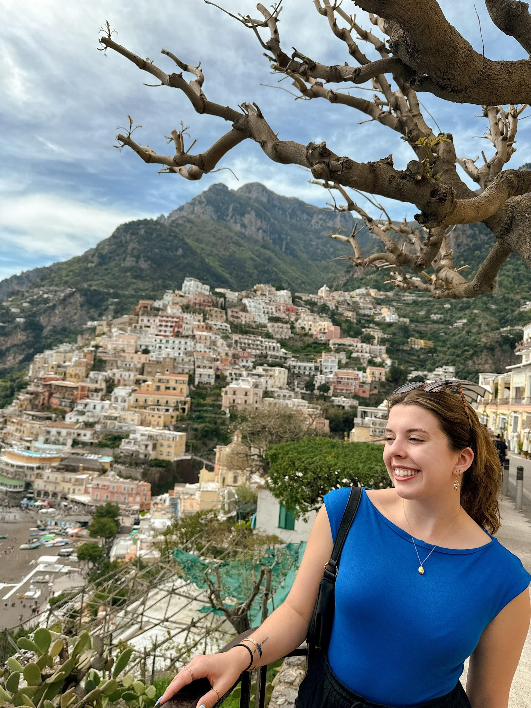 | Italy | amalfi | 4/5/2024 14:46:27 | Afternoon | yes | core_200 | Coastal | Putting myself in the frame | People | Obvious |
3 | amalfi_image5.JPG | A hand holds lemon sorbet served in a hollowed-out lemon with a leaf, inside a gelato shop. |  | Italy | amalfi | 4/6/2024 15:47:25 | Afternoon | yes | extra_100 | Indoor | Tasting the location | Food & Drink | Hint |
4 | amalfi_image6.JPG | A woman in sunglasses and a slogan T-shirt poses on a balcony above the hazy coastline. |  | Italy | amalfi | 4/8/2024 9:53:57 | Morning | yes | extra_100 | Coastal | Putting myself in the frame | People | Hint |
5 | amalfi_image7.JPG | A glass of white spritz with mint and a straw on a patterned café table. |  | Italy | amalfi | 4/6/2024 17:07:11 | Evening | yes | core_200 | Indoor | Tasting the location | Food & Drink | None |
6 | amalfi_image8.JPG | Point-of-view shot of legs on a dark sand beach looking out at the sea under a bright, hazy sun. | 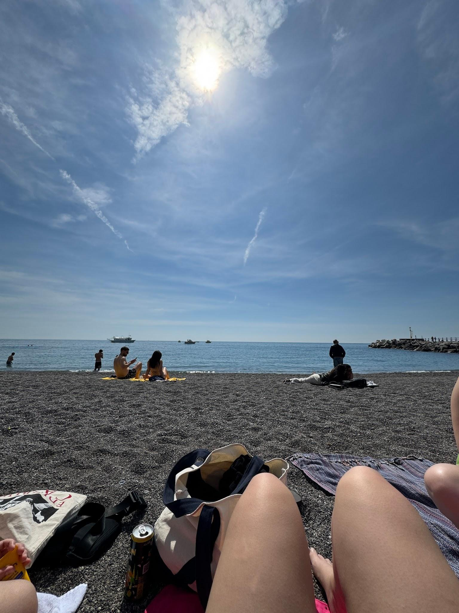 | Italy | amalfi | 4/6/2024 11:45:18 | Morning | yes | core_200 | Coastal | Documenting the location | Nature | None |
7 | amalfi_image10.JPG | View from inside a crowded bus as it passes another SITA bus on a narrow coastal road. | 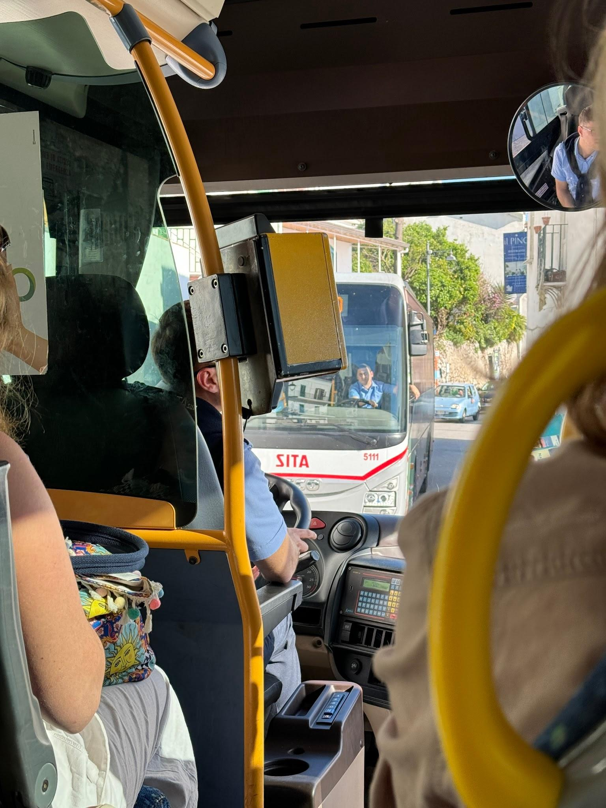 | Italy | amalfi | 4/4/2024 16:51:11 | Afternoon | yes | extra_100 | Indoor | Everyday life | None/Other | None |
8 | amalfi_image12.JPG | Inside a colorful boutique full of hanging wicker lamps, patchwork bags, and textiles. |  | Italy | amalfi | 4/5/2024 17:15:00 | Evening | yes | extra_100 | Indoor | Documenting the location | Objects & Text | None |
9 | amalfi_image13.JPG | A steep, narrow stone staircase climbs between whitewashed walls toward a blue sky. | 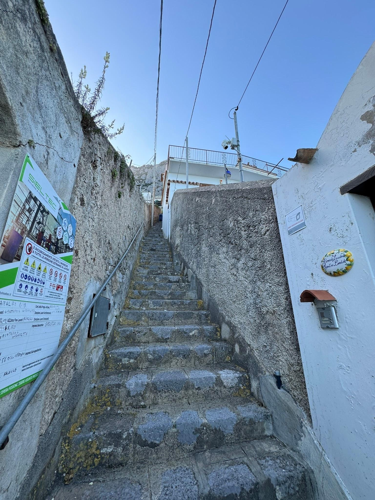 | Italy | amalfi | 4/4/2024 17:30:16 | Evening | yes | core_200 | Urban | Documenting the location | Built | None |
10 | amalfi_image14.JPG | A person reclines on a deck chair on a shaded terrace overlooking misty sea cliffs. | 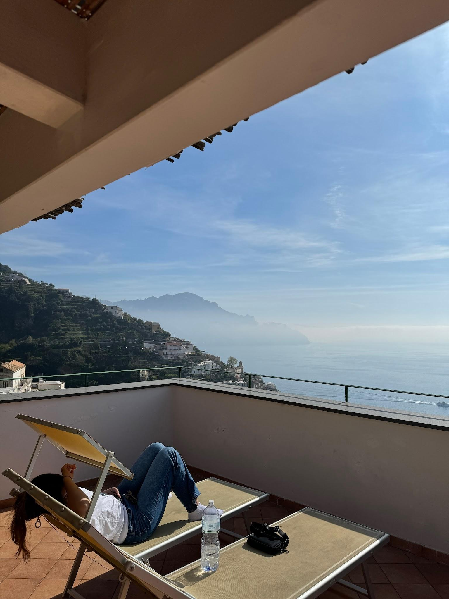 | Italy | amalfi | 4/8/2024 9:52:16 | Morning | yes | core_200 | Coastal | Documenting the location | Nature | None |
11 | amalfi_image16.JPG | A narrow shopping lane under a wooden pergola with linen clothes on display and people walking by. |  | Italy | amalfi | 4/5/2024 17:07:41 | Evening | yes | core_200 | Urban | Documenting the location | Built | None |
12 | amalfi_image17.JPG | A woman reaches up to pet a fluffy white cat lounging on a wall among potted flowers. |  | Italy | amalfi | 4/5/2024 17:21:01 | Evening | yes | extra_100 | Urban | Documenting the location | Nature | None |
13 | amalfi_image18.JPG | A dark sand beach dotted with people near the water under a blue sky with wispy clouds. |  | Italy | amalfi | 4/5/2024 17:44:42 | Evening | yes | core_200 | Coastal | Documenting the location | Nature | None |
14 | amalfi_image19.JPG | An illuminated vintage 'Ristorante Mediterraneo' sign at night. | 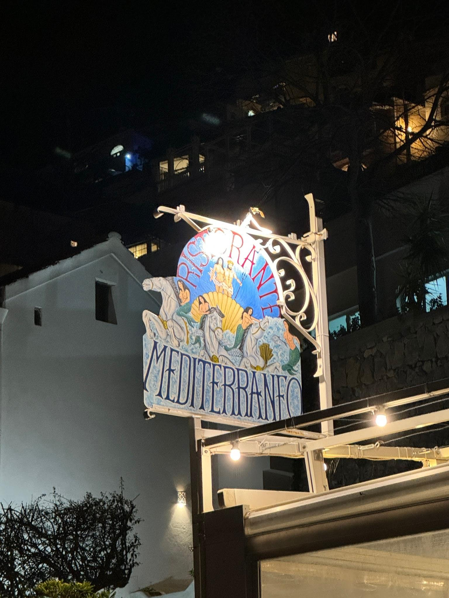 | Italy | amalfi | 4/5/2024 20:14:30 | Evening | yes | core_200 | Urban | Documenting the location | Objects & Text | None |
15 | amalfi_image21.JPG | Sun breaking through clouds over the sea, seen from high above terraced coastal houses. |  | Italy | amalfi | 4/7/2024 7:37:39 | Morning | yes | core_200 | Coastal | Documenting the location | Nature | None |
16 | amalfi_image23.JPG | Overview of the excavated stone ruins of Pompeii with mountains in the distance. | 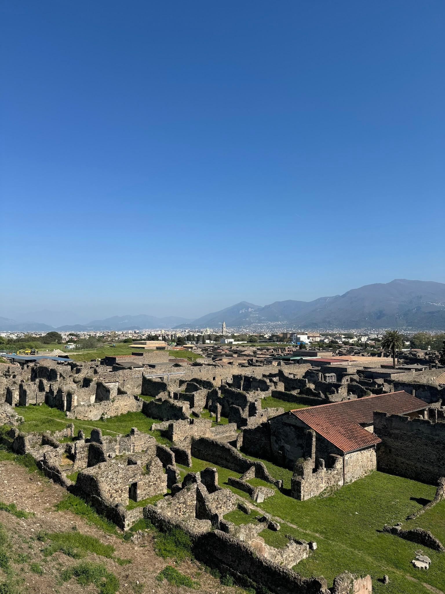 | Italy | amalfi | 4/7/2024 15:36:31 | Afternoon | yes | core_200 | Urban | Documenting the location | Built | Obvious |
17 | barcelona_image2.JPG | The red-brick Arc de Triomf in Barcelona at the end of a palm-lined promenade with crowds. |  | Spain | barcelona | 5/12/2024 15:48:33 | Afternoon | yes | core_200 | Urban | Documenting the location | Built | Hint |
18 | barcelona_image3.JPG | The ornate Cascada fountain in Parc de la Ciutadella reflected in a green pond. |  | Spain | barcelona | 5/12/2024 16:02:39 | Afternoon | yes | extra_100 | Nature | Documenting the location | Built | Hint |
19 | barcelona_image7.JPG | Three rustic bowls of salads and grain bowls, one with sliced steak and sourdough, on a wooden table. | 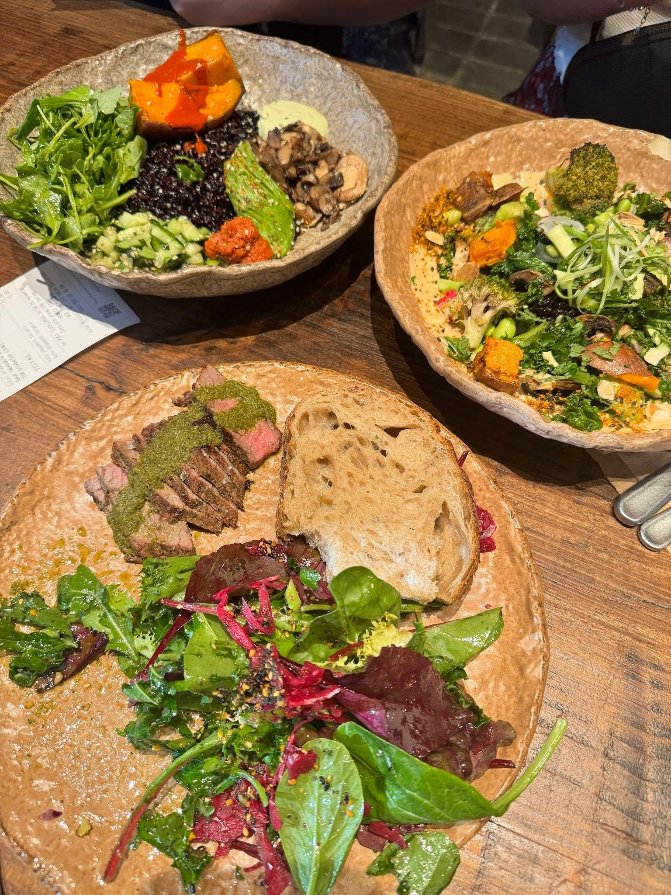 | Spain | barcelona | 5/12/2024 18:57:27 | Evening | yes | core_200 | Indoor | Tasting the location | Food & Drink | None |
20 | barcelona_image8.JPG | A tray of churros with three cups of thick hot chocolate on a café table. | 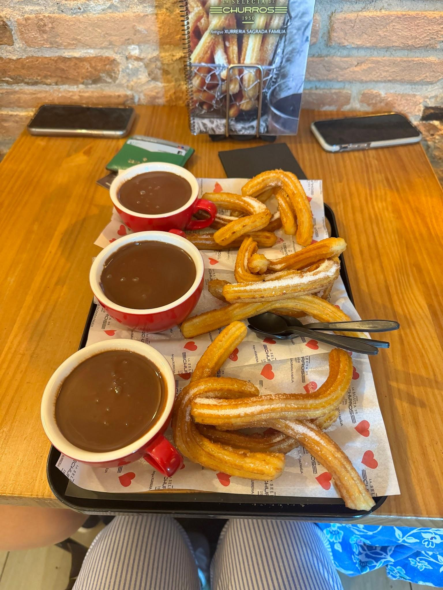 | Spain | barcelona | 5/12/2024 20:10:47 | Evening | yes | core_200 | Indoor | Tasting the location | Food & Drink | None |
21 | barcelona_image11.JPG | Close-up of the colorful broken-tile mosaic on Park Güell's serpentine bench. | 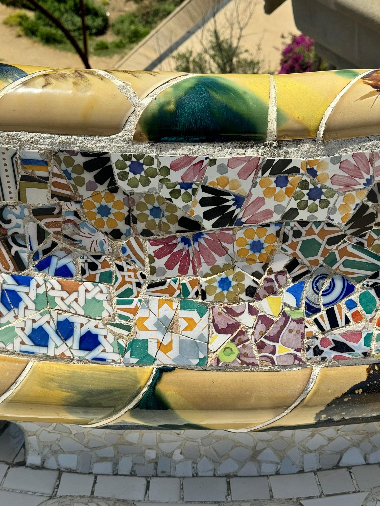 | Spain | barcelona | 5/13/2024 13:03:33 | Afternoon | yes | core_200 | Nature | Documenting the location | Objects & Text | Hint |
22 | barcelona_image12.JPG | A woman sits on the mosaic bench at Park Güell with the gatehouse tower and city behind her. | 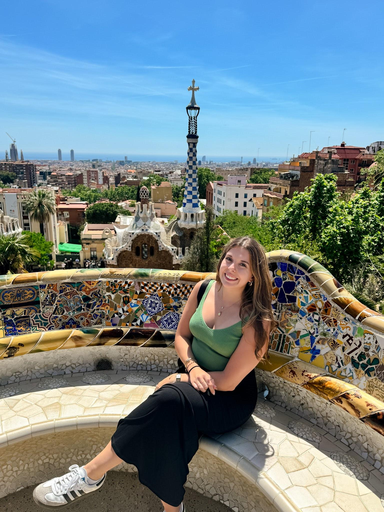 | Spain | barcelona | 5/13/2024 13:04:25 | Afternoon | yes | extra_100 | Urban | Putting myself in the frame | People | Obvious |
23 | barcelona_image14.JPG | A woman adjusts her bag on the curving mosaic bench at Park Güell, with a gatehouse and the city beyond. | 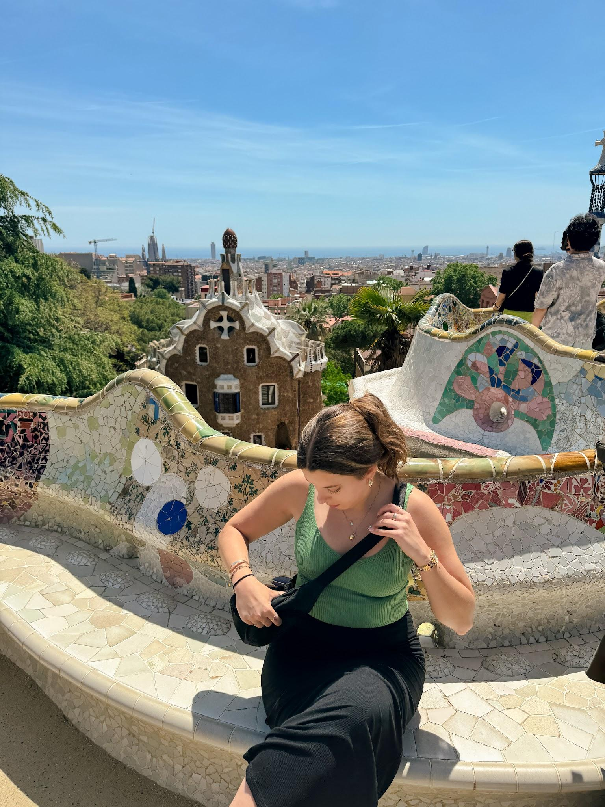 | Spain | barcelona | 5/13/2024 13:07:50 | Afternoon | yes | extra_100 | Urban | Putting myself in the frame | People | Obvious |
24 | barcelona_image15.JPG | A woman sits on the mosaic bench at Park Güell looking out over the park's trees. |  | Spain | barcelona | 5/13/2024 13:09:26 | Afternoon | yes | core_200 | Nature | Putting myself in the frame | People | Hint |
25 | barcelona_image16.JPG | Looking up at the white trencadís ceiling and mosaic medallions above the columns of Park Güell's Hypostyle Room. |  | Spain | barcelona | 5/13/2024 13:13:31 | Afternoon | yes | core_200 | Indoor | Documenting the location | Built | Hint |
26 | barcelona_image17.JPG | Tourists crowd the stairs around Park Güell's famous mosaic dragon (lizard) fountain. |  | Spain | barcelona | 5/13/2024 13:16:02 | Afternoon | yes | core_200 | Urban | Documenting the location | Built | Obvious |
27 | barcelona_image20.JPG | Three tapas on toasted bread with toppings including jamón and tomato, on a wooden board. |  | Spain | barcelona | 5/13/2024 15:26:54 | Afternoon | yes | core_200 | Indoor | Tasting the location | Food & Drink | None |
28 | barcelona_image23.JPG | Crowds gather at the entrance below the towering spires of the Sagrada Família under construction cranes. |  | Spain | barcelona | 5/13/2024 18:20:10 | Evening | yes | core_200 | Urban | Documenting the location | Built | Obvious |
29 | barcelona_image24.JPG | Looking up the nave of the Sagrada Família at its tree-like columns and starburst ceiling. |  | Spain | barcelona | 5/13/2024 18:48:48 | Evening | yes | extra_100 | Indoor | Documenting the location | Built | Obvious |
30 | barcelona_image25.JPG | Upward view of the branching columns and golden, star-patterned vaults inside the Sagrada Família. | 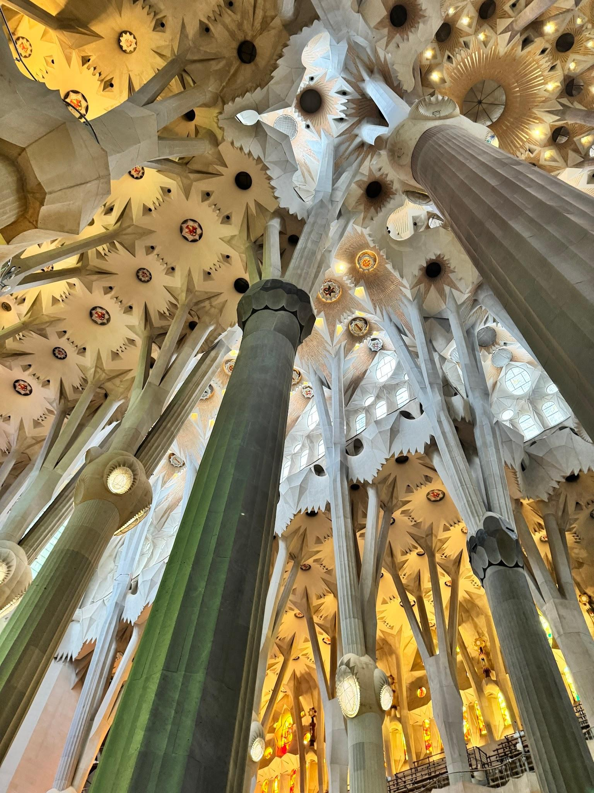 | Spain | barcelona | 5/13/2024 18:49:47 | Evening | yes | core_200 | Indoor | Documenting the location | Built | Obvious |
31 | barcelona_image27.JPG | Two colorful poke-style bowls with steak, pickled onions, and greens, plus a pink juice. | 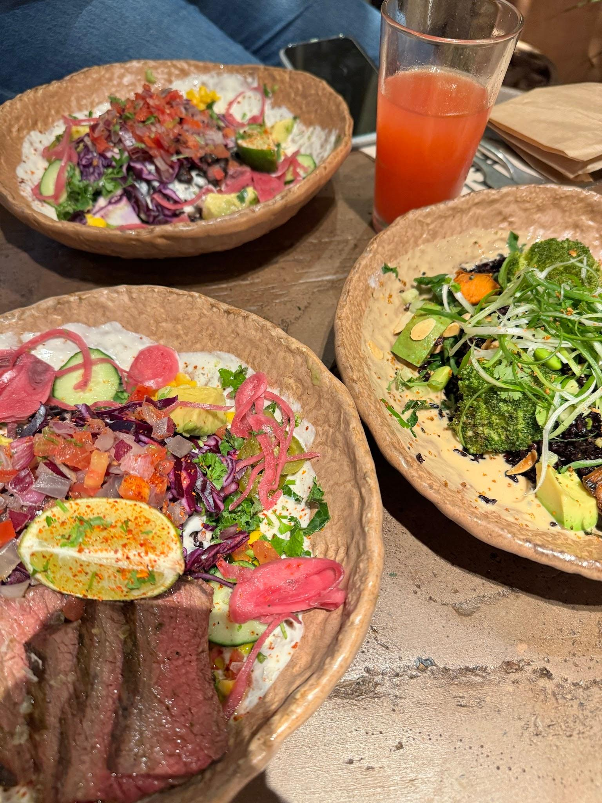 | Spain | barcelona | 5/14/2024 12:46:55 | Afternoon | yes | extra_100 | Indoor | Tasting the location | Food & Drink | None |
32 | brussels_image1.JPG | A woman in a teal scarf stands in the Grand-Place with the Gothic Town Hall tower behind her. | 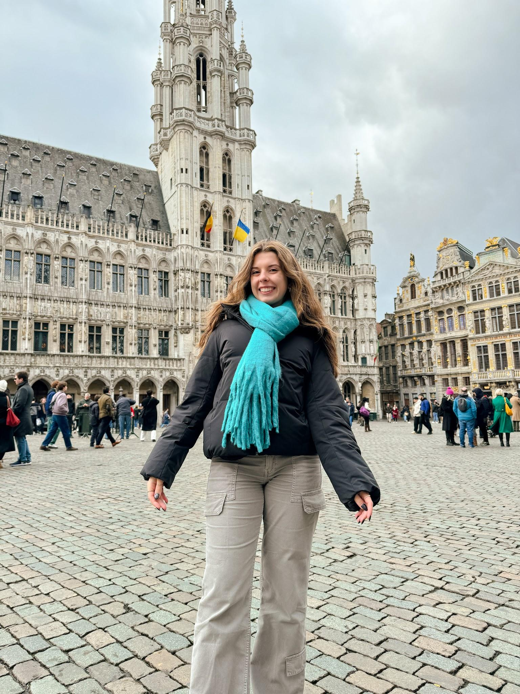 | Belgium | brussels | 2/24/2024 13:16:39 | Afternoon | yes | extra_100 | Urban | Putting myself in the frame | People | Obvious |
33 | brussels_image5.JPG | The glass-roofed Galeries Royales Saint-Hubert shopping arcade full of people. | 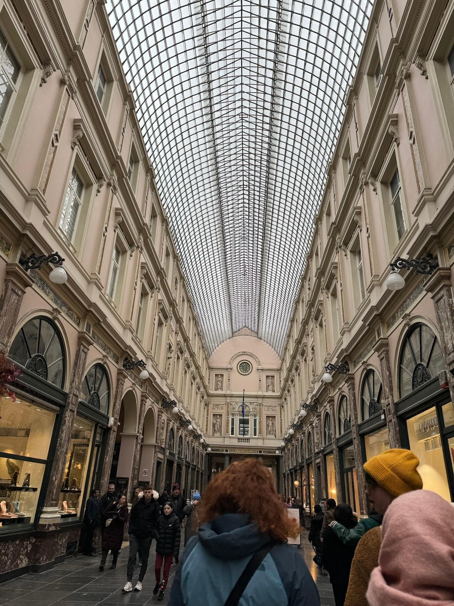 | Belgium | brussels | 2/24/2024 12:23:25 | Afternoon | yes | core_200 | Indoor | Documenting the location | Built | None |
34 | brussels_image6.JPG | The Gothic Brussels Town Hall towering over a busy Grand-Place on a cloudy day. | 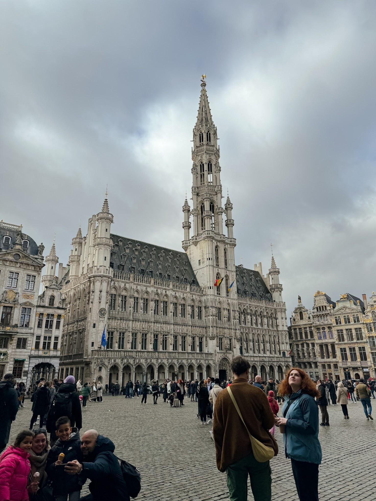 | Belgium | brussels | 2/24/2024 13:12:42 | Afternoon | yes | extra_100 | Urban | Documenting the location | Built | Obvious |
35 | brussels_image7.JPG | Three friends in scarves pose in the Grand-Place in front of the Town Hall. |  | Belgium | brussels | 2/24/2024 13:13:51 | Afternoon | yes | extra_100 | Urban | Sharing the experience | People | Obvious |
36 | brussels_image8.JPG | Four friends pose together beside stainless steel brewing tanks in a brewery. | 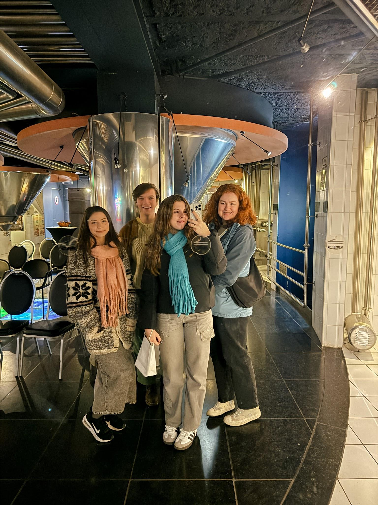 | Belgium | brussels | 2/24/2024 13:45:15 | Afternoon | yes | core_200 | Indoor | Sharing the experience | People | None |
37 | brussels_image10.JPG | A long flight of colorful beer tasters on a graffiti-carved round wooden table. | 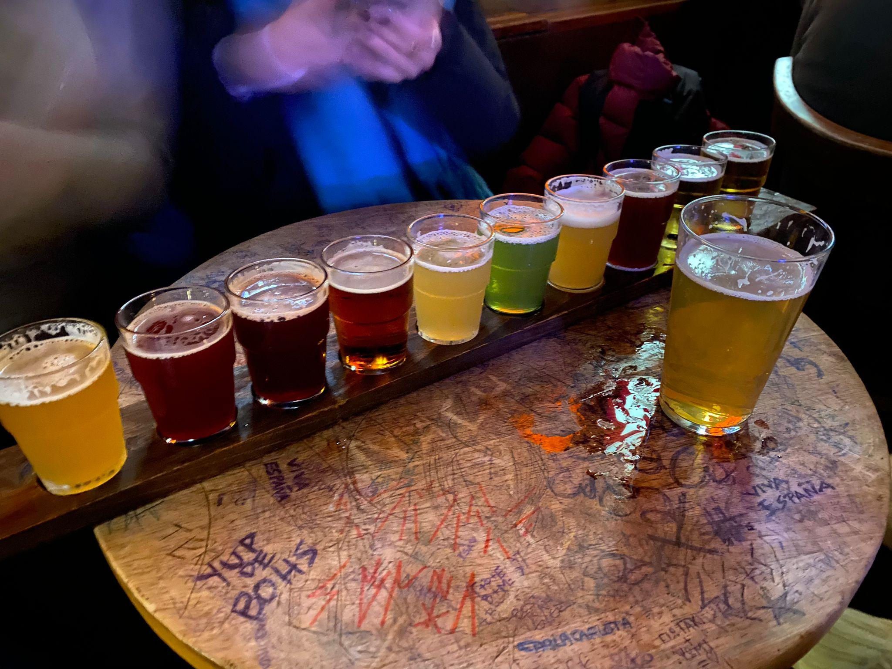 | Belgium | brussels | 2/24/2024 21:29:00 | Night | yes | extra_100 | Indoor | Tasting the location | Food & Drink | None |
38 | brussels_image11.JPG | Two friends stand on a rooftop terrace with the Brussels skyline and clouds behind them. |  | Belgium | brussels | 2/24/2024 15:19:57 | Afternoon | yes | core_200 | Urban | Sharing the experience | People | None |
39 | brussels_image12.JPG | A sesame-bun burger with fries, ketchup, and a pint of beer on a wooden table. | 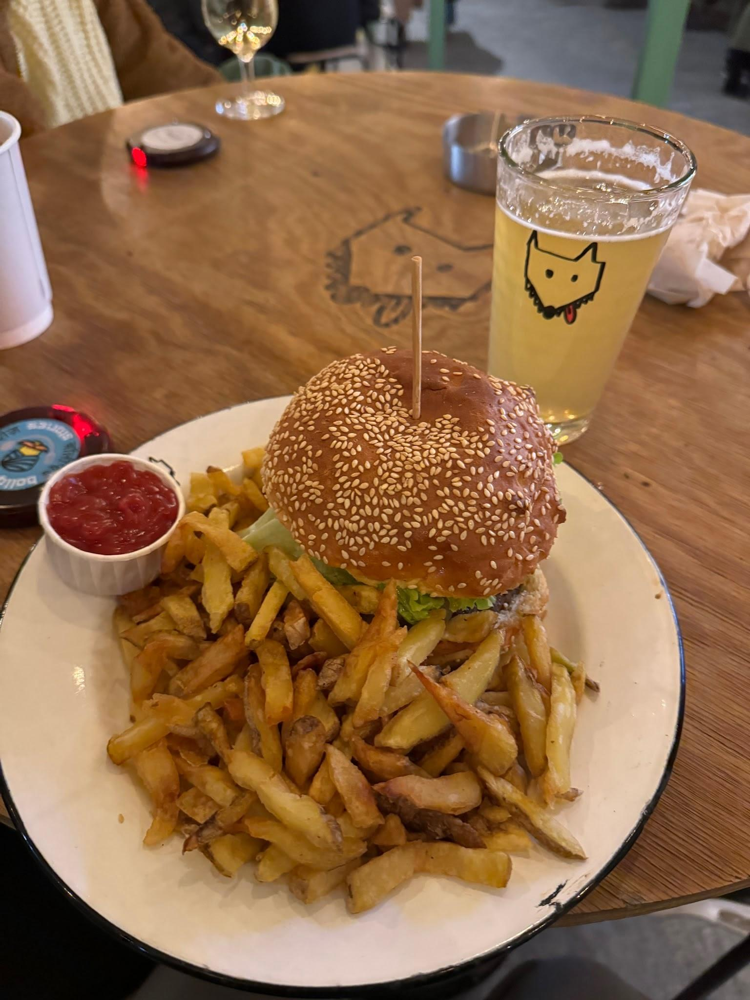 | Belgium | brussels | 2/24/2024 19:48:22 | Evening | yes | core_200 | Indoor | Tasting the location | Food & Drink | None |
40 | brussels_image13.JPG | Neon signs glow over the crowded entrance of the Delirium bar on a narrow street at night. |  | Belgium | brussels | 2/24/2024 20:38:02 | Evening | yes | core_200 | Urban | Documenting the location | Built | Hint |
41 | brussels_image14.JPG | A chalkboard beer menu listing dozens of Belgian beers above a crowded bar. | 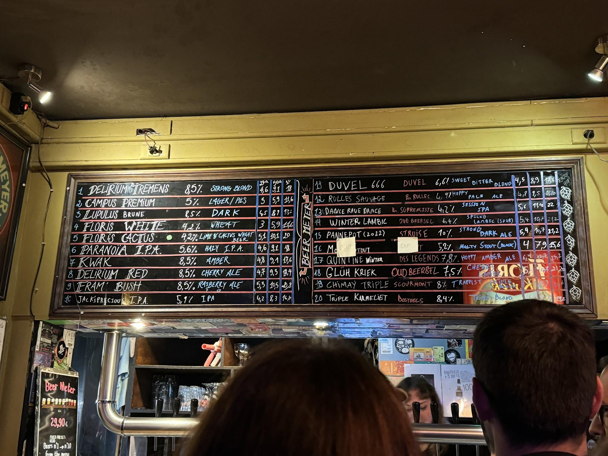 | Belgium | brussels | 2/24/2024 20:53:51 | Evening | yes | core_200 | Indoor | Documenting the location | Objects & Text | None |
42 | brussels_image16.JPG | Brunch of eggs Benedict on a waffle with salad, plus a matcha latte, at the Woodpecker café. |  | Belgium | brussels | 2/25/2024 12:04:48 | Afternoon | yes | core_200 | Indoor | Tasting the location | Food & Drink | None |
43 | brussels_image17.JPG | Three friends pose inside a sphere of the Atomium lit in red and pink light. |  | Belgium | brussels | 2/25/2024 15:14:15 | Afternoon | yes | extra_100 | Indoor | Sharing the experience | People | None |
44 | brussels_image18.JPG | Visitors look up at a ring of glowing light tubes inside one of the Atomium's spheres. |  | Belgium | brussels | 2/25/2024 15:17:28 | Afternoon | yes | core_200 | Indoor | Sharing the experience | Built | None |
45 | brussels_image20.JPG | Looking up at the shiny steel spheres of the Atomium against a cloudy sky. | 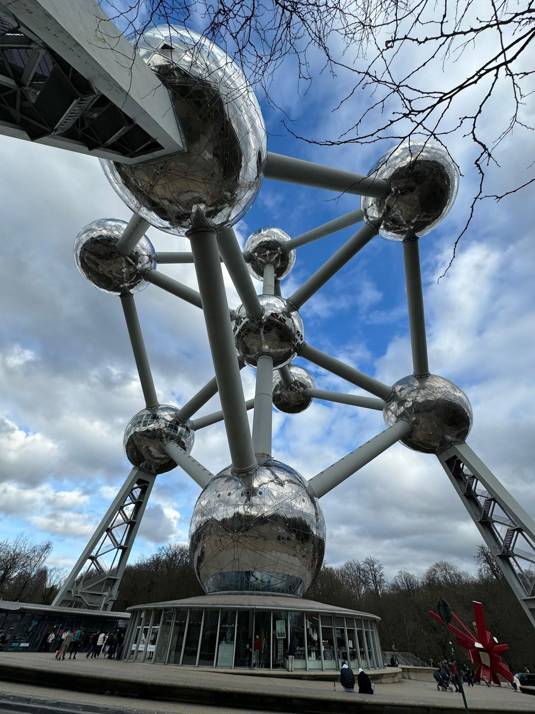 | Belgium | brussels | 2/25/2024 15:45:01 | Afternoon | yes | core_200 | Urban | Documenting the location | Built | Obvious |
46 | cinque_image1.JPG | The colorful cliffside village of Manarola above crashing waves in Cinque Terre. |  | Italy | cinque | 3/28/2024 16:43:56 | Afternoon | yes | extra_100 | Coastal | Documenting the location | Built | Obvious |
47 | cinque_image2.JPG | A tunnel wall covered in hundreds of hand-painted ceramic tiles. | 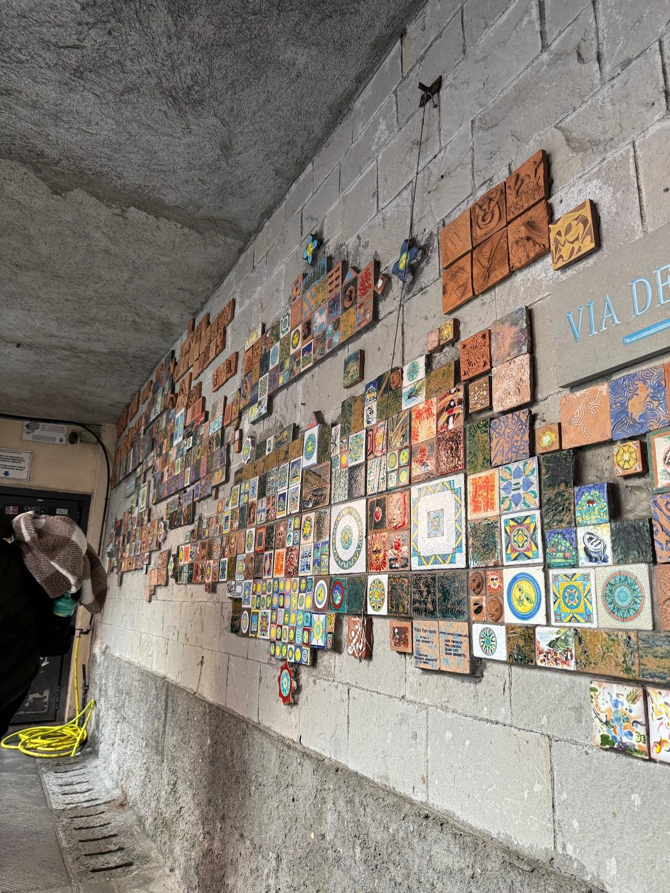 | Italy | cinque | 3/28/2024 17:06:31 | Evening | yes | core_200 | Indoor | Documenting the location | Objects & Text | None |
48 | cinque_image3.JPG | A smiling woman with a blue sweater over her shoulders sits on a green bench in the sun. | 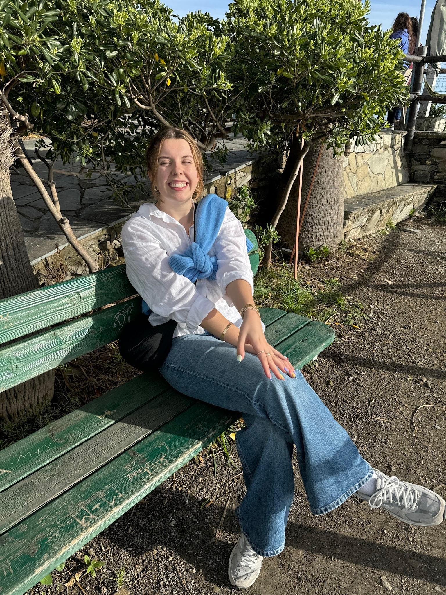 | Italy | cinque | 3/28/2024 16:37:47 | Afternoon | yes | extra_100 | Nature | Putting myself in the frame | People | None |
49 | cinque_image4.JPG | Riomaggiore's stacked red, orange, and yellow houses rise above a rough sea inlet. | 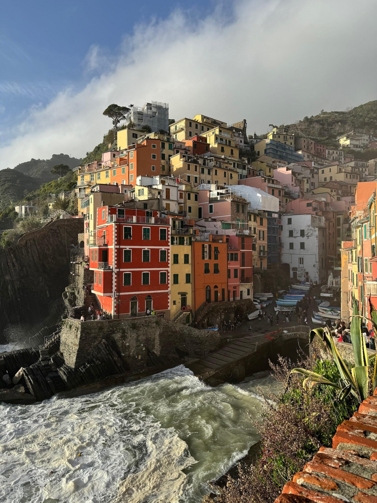 | Italy | cinque | 3/28/2024 17:16:21 | Evening | yes | extra_100 | Coastal | Documenting the location | Built | Obvious |
50 | cinque_image5.JPG | Two friends pose at a crowded viewpoint in front of Riomaggiore's colorful houses. | 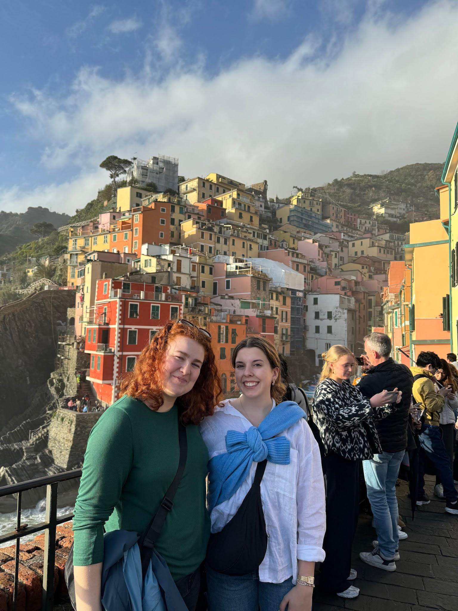 | Italy | cinque | 3/28/2024 17:21:32 | Evening | yes | core_200 | Coastal | Sharing the experience | People | Obvious |
51 | cinque_image8.JPG | A quiet main street lined with pastel buildings with green shutters and shop awnings. | 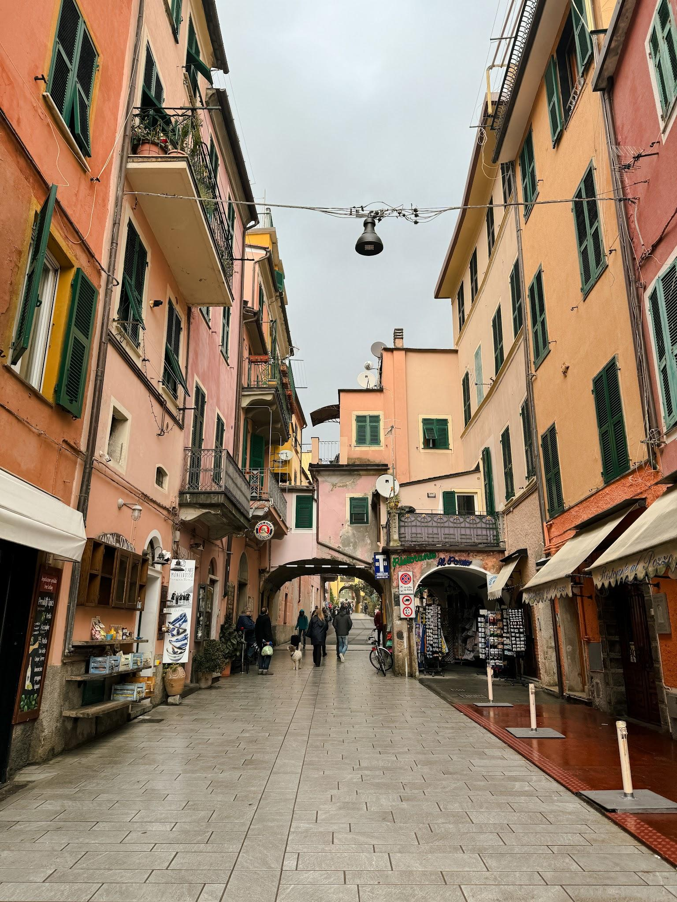 | Italy | cinque | 3/28/2024 12:08:56 | Afternoon | yes | core_200 | Urban | Documenting the location | Built | None |
52 | cinque_image9.JPG | Two friends take a mirror selfie in an ornate old mirror propped against a wall. |  | Italy | cinque | 3/28/2024 12:17:26 | Afternoon | yes | core_200 | Urban | Sharing the experience | People | None |
53 | cinque_image10.JPG | Takeaway boxes of pasta with tomato sauce next to bottles of lemonade on a café table. | 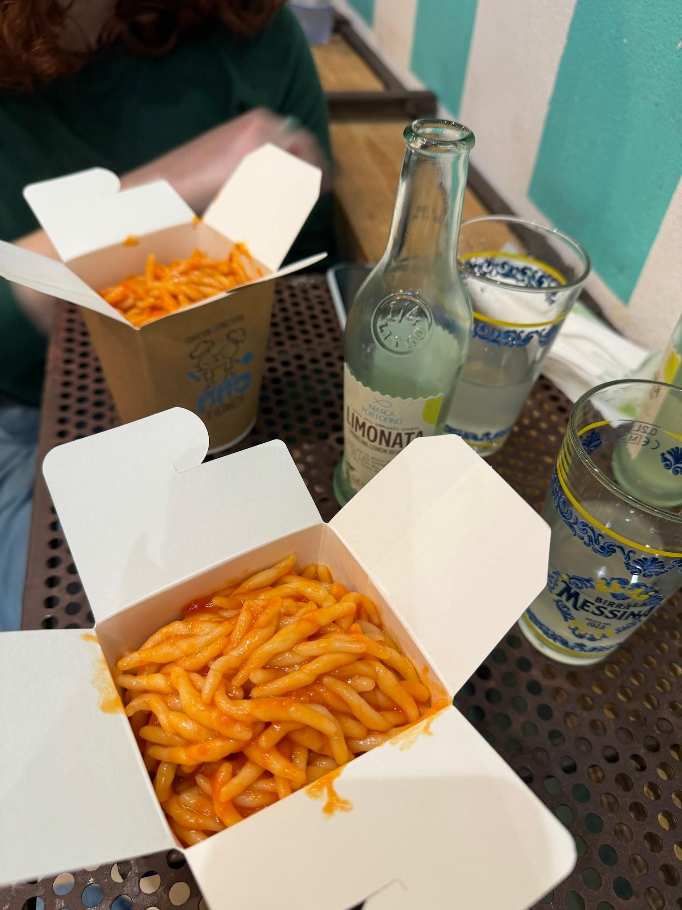 | Italy | cinque | 3/28/2024 13:01:41 | Afternoon | yes | extra_100 | Indoor | Tasting the location | Food & Drink | None |
54 | cinque_image14.JPG | Stormy view over Vernazza's harbor, church, and castle tower with rough waves. | 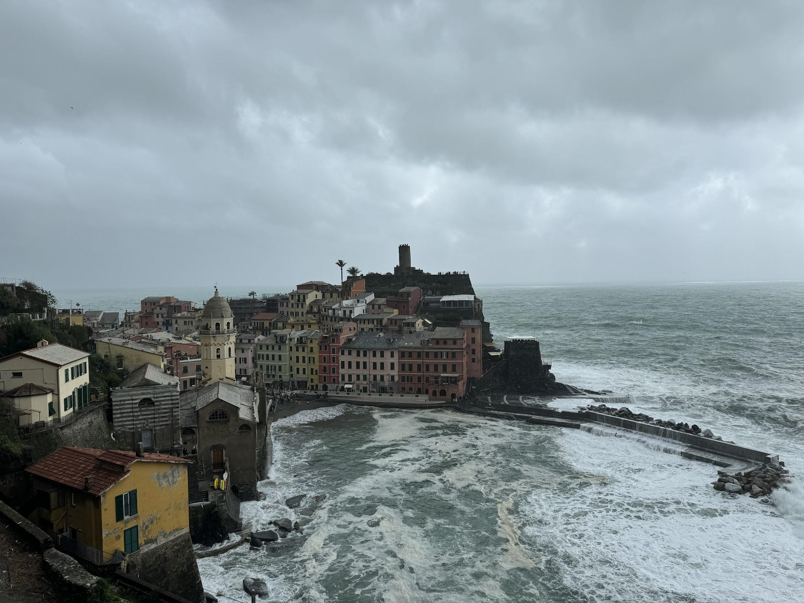 | Italy | cinque | 3/28/2024 13:47:03 | Afternoon | yes | core_200 | Coastal | Documenting the location | Nature | Hint |
55 | cinque_image15.JPG | Hikers climb a stone staircase with metal railings up a terraced hillside. | 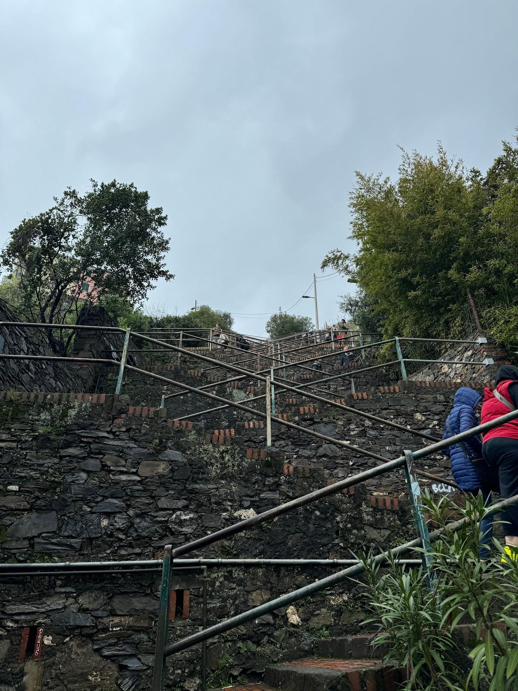 | Italy | cinque | 3/28/2024 14:41:53 | Afternoon | yes | core_200 | Nature | Documenting the location | Nature | None |
56 | cinque_image16.JPG | A narrow lane between tall pink and yellow buildings with a 'Bar Nunzio' sign. | 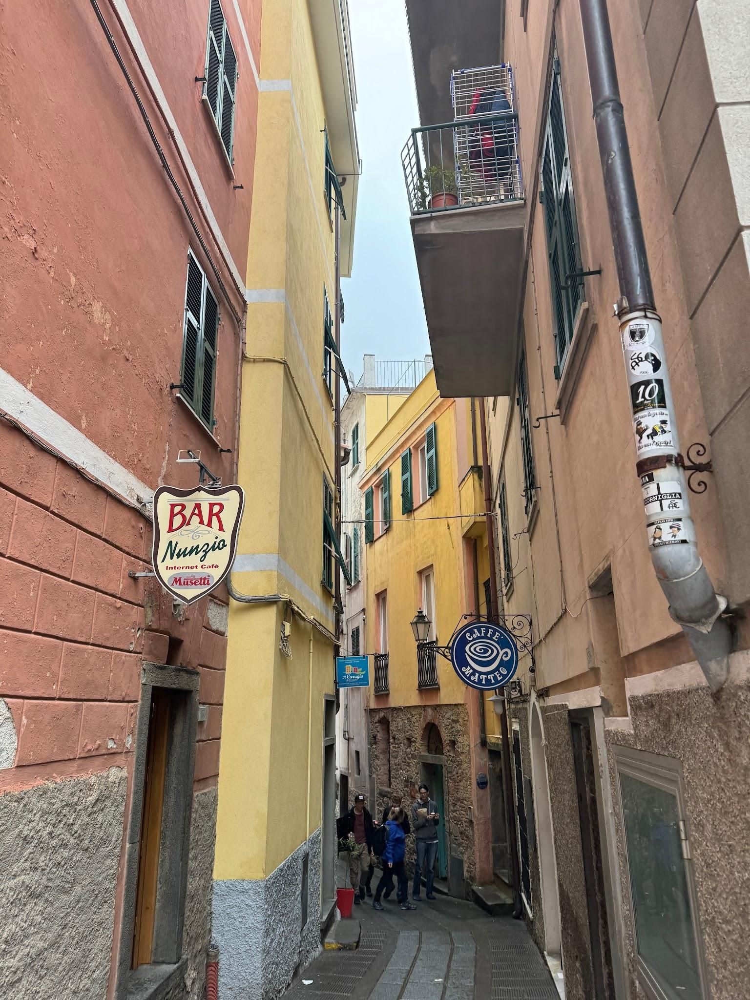 | Italy | cinque | 3/28/2024 15:03:15 | Afternoon | yes | core_200 | Urban | Documenting the location | Built | None |
57 | cinque_image17.JPG | Looking down a busy street of colorful buildings toward the sea under a hazy sun. | 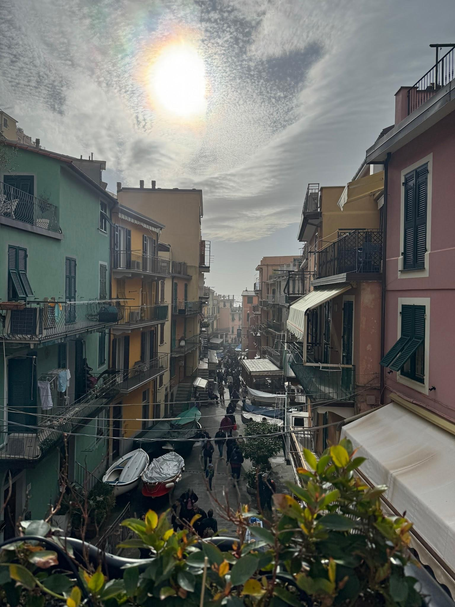 | Italy | cinque | 3/28/2024 16:13:22 | Afternoon | yes | core_200 | Urban | Documenting the location | Built | None |
58 | cinque_image18.JPG | A hand holds a chocolate gelato cone in front of the arched entrance of Gelateria Alberto. |  | Italy | cinque | 3/28/2024 15:07:58 | Afternoon | yes | core_200 | Urban | Tasting the location | Food & Drink | Hint |
59 | cinque_image20.JPG | A woman in a blue sweater smiles at a railing with Manarola's colorful cliffside houses behind her. |  | Italy | cinque | 3/28/2024 16:25:16 | Afternoon | yes | extra_100 | Coastal | Putting myself in the frame | People | Obvious |
60 | dublin_image1.JPG | Two friends pose outside the red, light-covered Temple Bar pub in Dublin. | 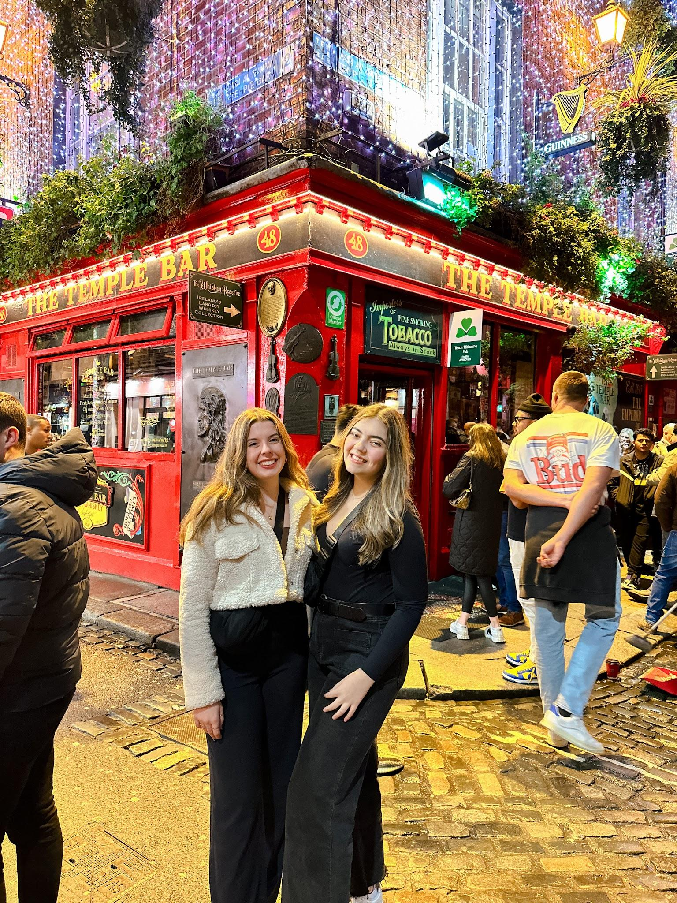 | Ireland | dublin | 2/17/2024 22:15:37 | Night | yes | core_200 | Urban | Sharing the experience | People | Obvious |
61 | dublin_image2.JPG | Three friends pose with the bronze Molly Malone statue and her cart. |  | Ireland | dublin | 2/17/2024 12:43:10 | Afternoon | yes | core_200 | Urban | Sharing the experience | People | Hint |
62 | dublin_image3.JPG | Looking up at a Gothic stone arch framing colorful stained glass windows inside a cathedral. |  | Ireland | dublin | 2/17/2024 11:23:46 | Morning | yes | extra_100 | Indoor | Documenting the location | Built | None |
63 | dublin_image5.JPG | A pint of Guinness on a polished wooden pub table. |  | Ireland | dublin | 2/17/2024 20:16:45 | Evening | yes | core_200 | Indoor | Tasting the location | Food & Drink | Hint |
64 | dublin_image6.JPG | A woman with a black umbrella twirls in the cobbled courtyard of Dublin Castle. | 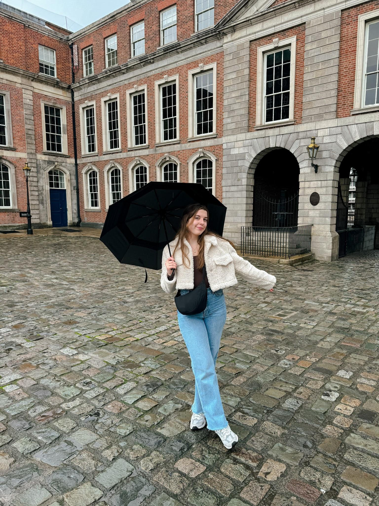 | Ireland | dublin | 2/17/2024 12:06:51 | Afternoon | yes | core_200 | Urban | Putting myself in the frame | People | None |
65 | dublin_image7.JPG | A grassy garden lawn with a curving path toward colorful buildings under a gray sky. |  | Ireland | dublin | 2/17/2024 12:18:38 | Afternoon | yes | core_200 | Nature | Documenting the location | Nature | None |
66 | dublin_image9.JPG | A smiling woman in a fleece jacket stands in front of a colorful tiled wall of hearts and notes. | 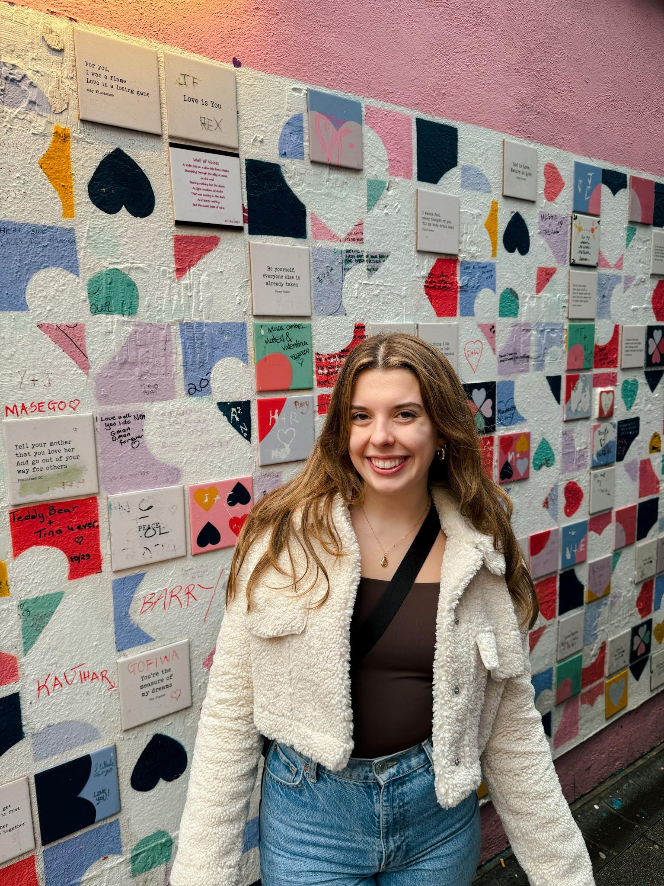 | Ireland | dublin | 2/17/2024 14:14:16 | Afternoon | yes | extra_100 | Urban | Putting myself in the frame | People | None |
67 | dublin_image10.JPG | The Temple Bar pub at night, its facade covered in twinkling lights and hanging plants. | 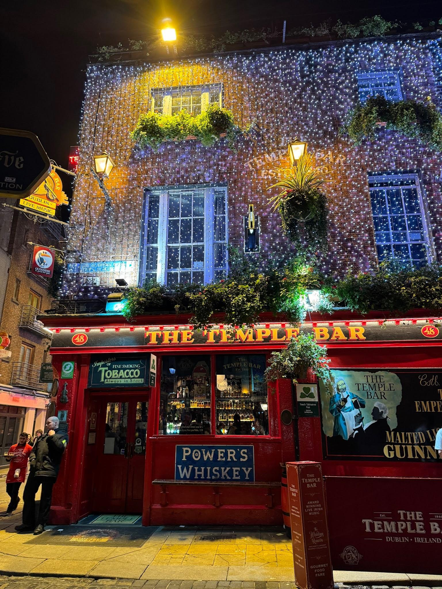 | Ireland | dublin | 2/17/2024 1:45:30 | Night | yes | extra_100 | Urban | Documenting the location | Built | Obvious |
68 | dublin_image11.JPG | Colorful painted tiles spelling 'Love Lane' on a wall covered in hearts and handwritten notes. |  | Ireland | dublin | 2/17/2024 14:15:02 | Afternoon | yes | core_200 | Urban | Documenting the location | Objects & Text | None |
69 | dublin_image13.JPG | A smiling woman holding a black umbrella stands in the cobbled courtyard of Dublin Castle. | 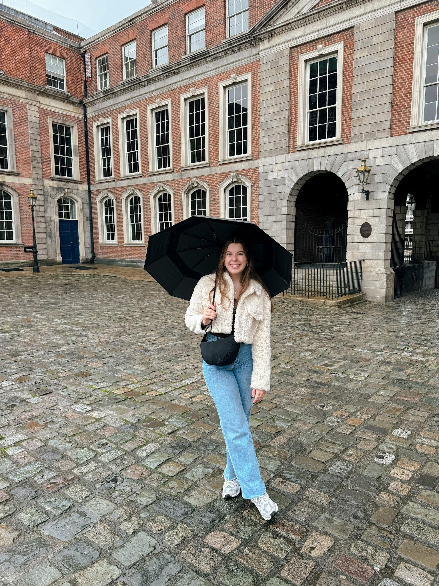 | Ireland | dublin | 2/17/2024 12:06:50 | Afternoon | yes | core_200 | Urban | Putting myself in the frame | People | None |
70 | dublin_image14.JPG | A bowl of Irish beef stew with mashed potato, a pint of Guinness, and a burger with fries. | 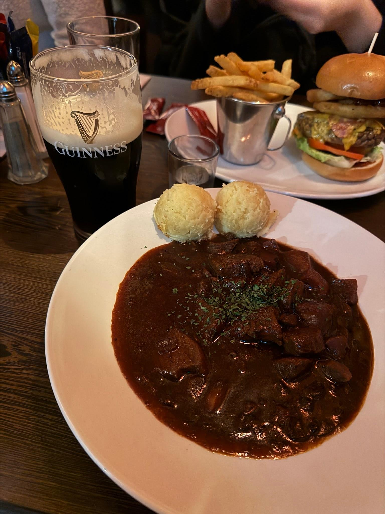 | Ireland | dublin | 2/17/2024 20:23:19 | Evening | yes | core_200 | Indoor | Tasting the location | Food & Drink | Hint |
71 | dublin_image15.JPG | The arched entrance of the Jameson Distillery on Bow Street. | 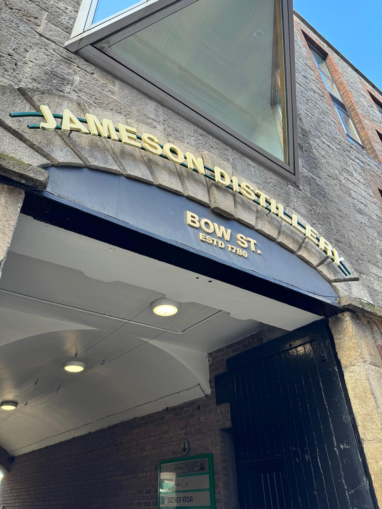 | Ireland | dublin | 2/18/2024 12:03:44 | Afternoon | yes | extra_100 | Urban | Documenting the location | Objects & Text | Hint |
72 | dublin_image16.JPG | A woman stands beside a large Guinness St. James's Gate sign with the gold harp logo. | Ireland | dublin | 2/18/2024 13:34:23 | Afternoon | yes | extra_100 | Urban | Putting myself in the frame | Objects & Text | Obvious | |
73 | dublin_image17.JPG | A red neon '232°C' sign about roasting barley inside the Guinness Storehouse exhibit. |  | Ireland | dublin | 2/18/2024 13:48:40 | Afternoon | yes | core_200 | Indoor | Documenting the location | Objects & Text | None |
74 | edinburgh_image1.JPG | Edinburgh Castle on its rocky crag seen above green trees under a gray sky. |  | UK | edinburgh | 6/11/2024 10:18:17 | Morning | yes | core_200 | Nature | Documenting the location | Built | Obvious |
75 | edinburgh_image4.JPG | Crowds in Crown Square at Edinburgh Castle beneath a clock tower and stone buildings. |  | UK | edinburgh | 6/11/2024 12:01:41 | Afternoon | yes | core_200 | Urban | Documenting the location | Built | None |
76 | edinburgh_image5.JPG | Visitors pass through a stone gatehouse between high castle walls at Edinburgh Castle. |  | UK | edinburgh | 6/11/2024 12:14:47 | Afternoon | yes | core_200 | Urban | Documenting the location | Built | Hint |
77 | edinburgh_image6.JPG | A hand holds open a small book on the Crawford clan's motto, crest, and origins. | 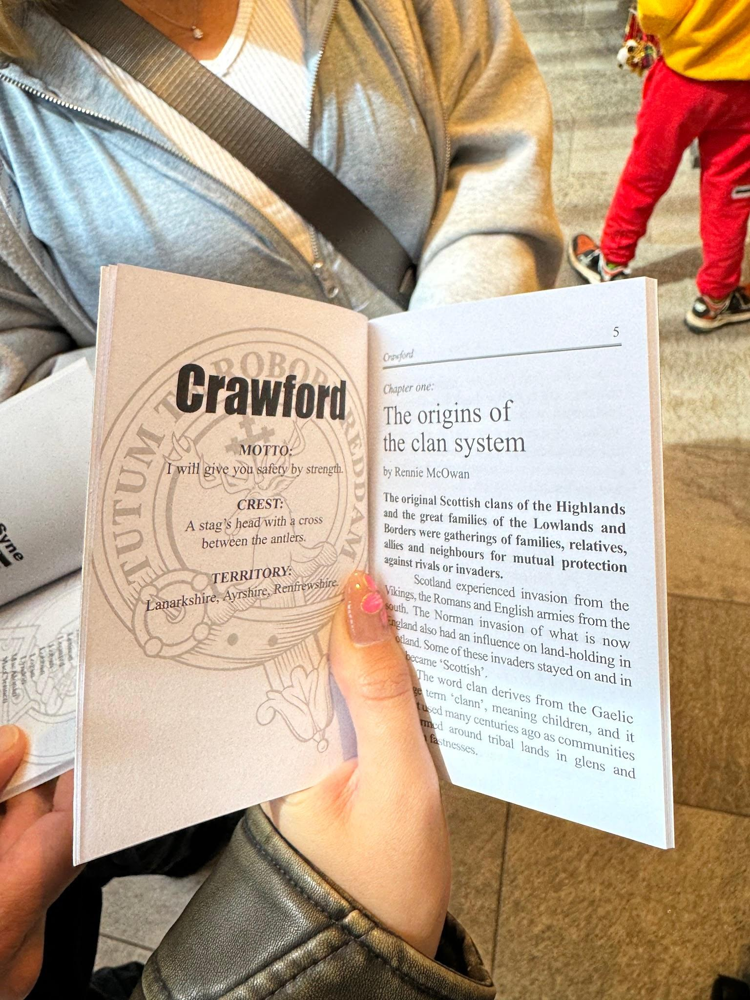 | UK | edinburgh | 6/11/2024 12:21:34 | Afternoon | yes | core_200 | Indoor | Documenting the location | Objects & Text | Hint |
78 | edinburgh_image7.JPG | A 'Royal Mile' street sign on a sandstone building beside a Witchery Tour plaque. | 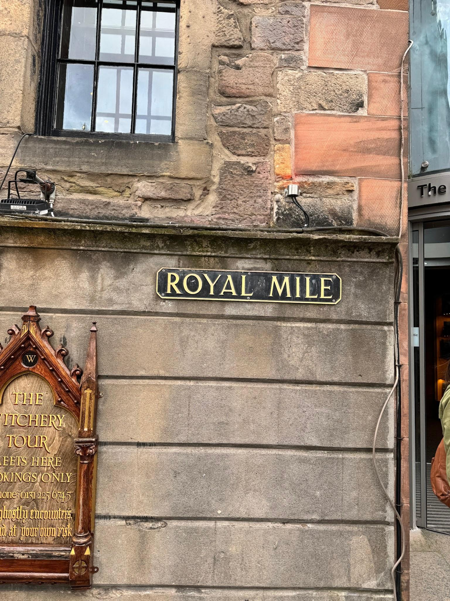 | UK | edinburgh | 6/11/2024 12:36:49 | Afternoon | yes | core_200 | Urban | Documenting the location | Objects & Text | Hint |
79 | edinburgh_image9.JPG | The vaulted Gothic nave of St Giles' Cathedral hung with colorful heraldic banners. |  | UK | edinburgh | 6/11/2024 14:22:09 | Afternoon | yes | extra_100 | Indoor | Documenting the location | Built | Hint |
80 | edinburgh_image10.JPG | Victoria Street's curving row of brightly painted shopfronts under strings of bunting. | 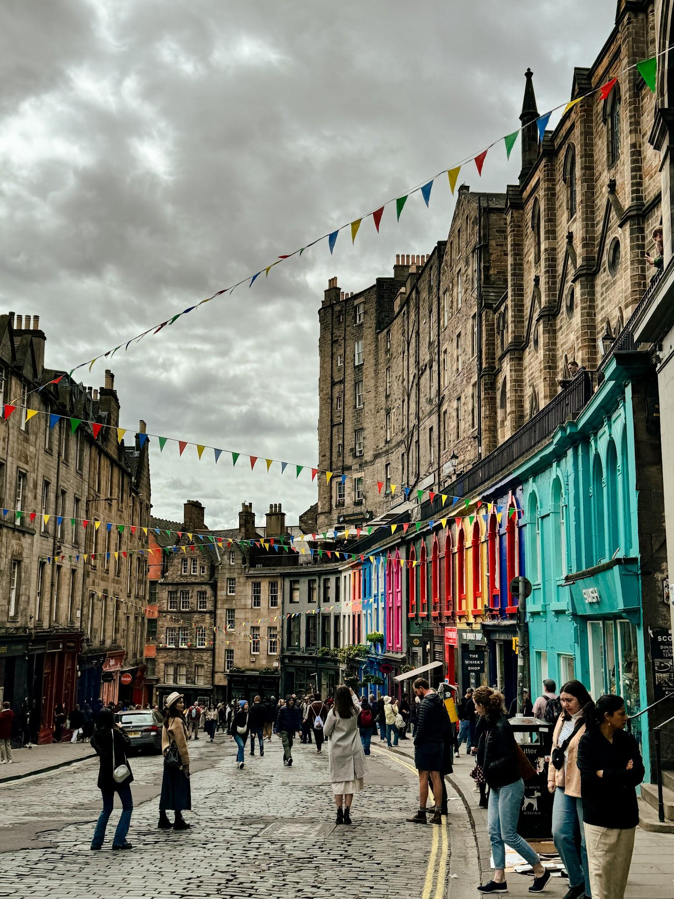 | UK | edinburgh | 6/11/2024 14:34:48 | Afternoon | yes | extra_100 | Urban | Documenting the location | Built | Obvious |
81 | edinburgh_image12.JPG | Tall old stone tenements tower over a busy cobbled street in Edinburgh's Old Town. | 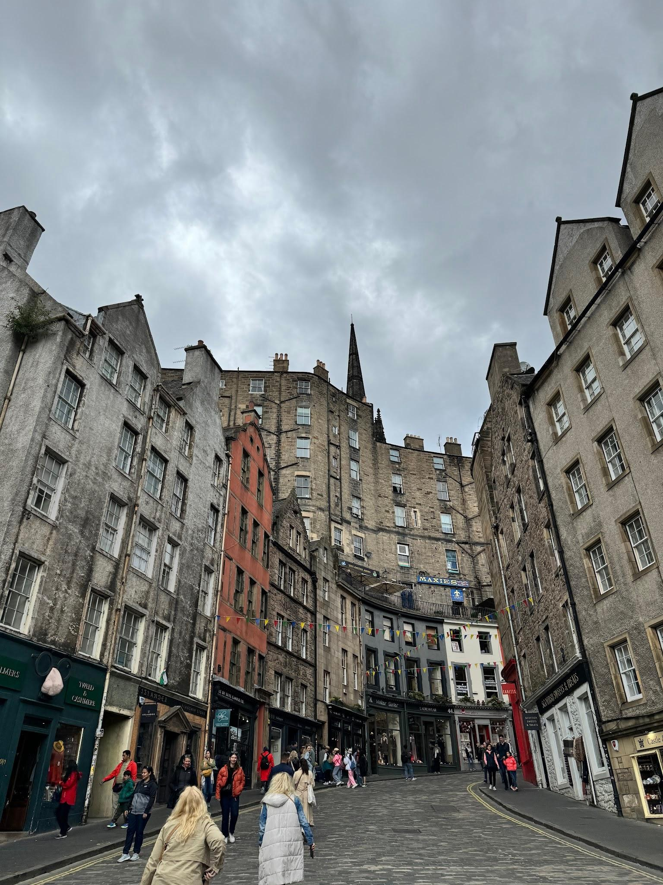 | UK | edinburgh | 6/11/2024 15:06:32 | Afternoon | yes | core_200 | Urban | Documenting the location | Built | Hint |
82 | edinburgh_image14.JPG | A sushi dinner with nigiri, maki, edamame, and sake on a dark restaurant table. | 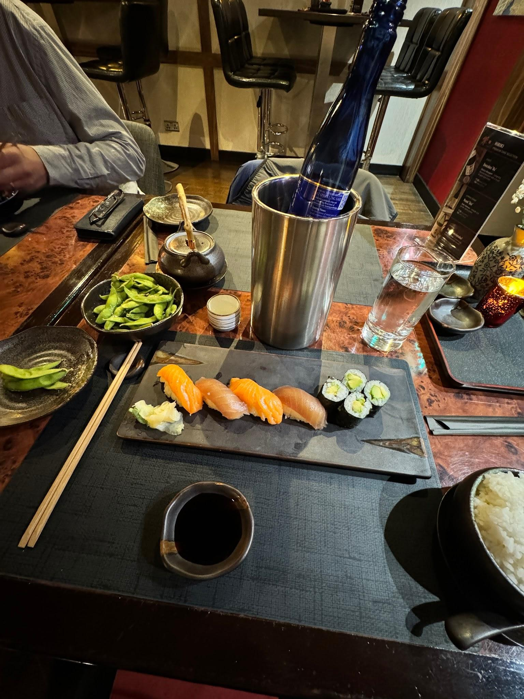 | UK | edinburgh | 6/11/2024 19:58:34 | Evening | yes | extra_100 | Indoor | Tasting the location | Food & Drink | None |
83 | edinburgh_image15.JPG | View from Arthur's Seat over green hills, the city, and the Firth of Forth. | 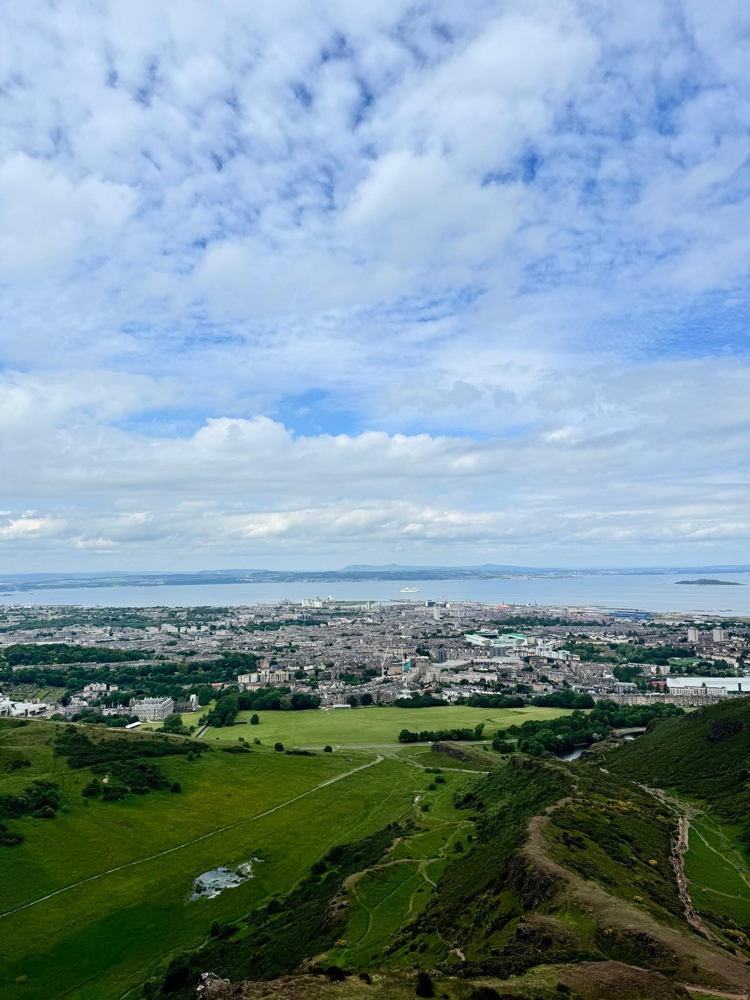 | UK | edinburgh | 6/12/2024 13:37:30 | Afternoon | yes | core_200 | Coastal | Documenting the location | Nature | Hint |
84 | edinburgh_image17.JPG | A loch and green parkland seen from a hilltop under a soft cloudy sky. | 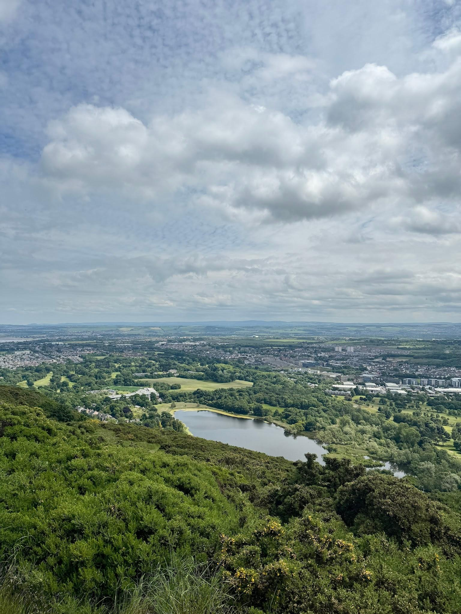 | UK | edinburgh | 6/12/2024 14:02:07 | Afternoon | yes | extra_100 | Nature | Documenting the location | Nature | None |
85 | edinburgh_image18.JPG | The Water of Leith flowing past the old stone buildings of Dean Village. | 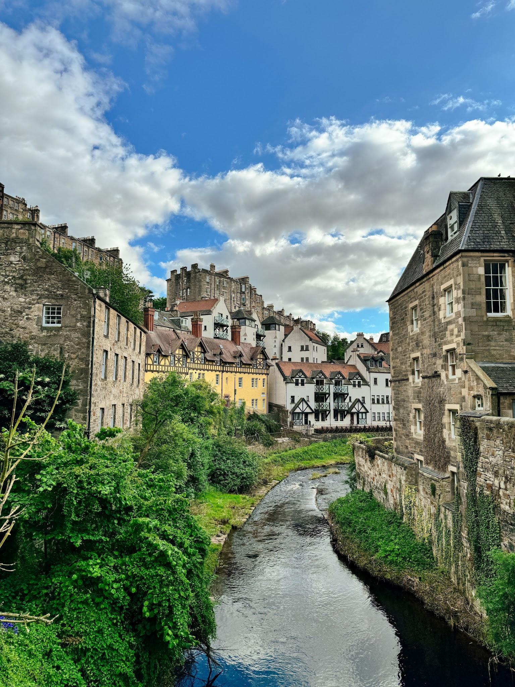 | UK | edinburgh | 6/12/2024 18:44:37 | Evening | yes | core_200 | Urban | Documenting the location | Built | Hint |
86 | edinburgh_image19.JPG | Looking up through a leafy tree at the stone arches of a tall viaduct bridge. | 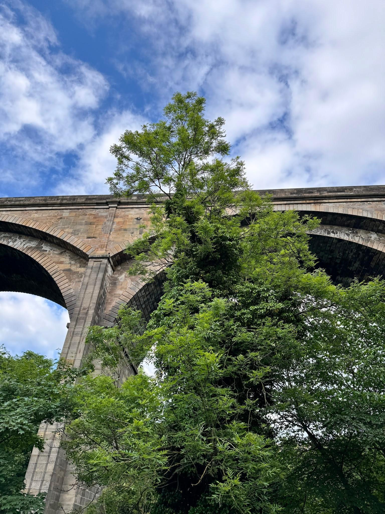 | UK | edinburgh | 6/12/2024 18:55:53 | Evening | yes | extra_100 | Nature | Documenting the location | Built | None |
87 | edinburgh_image20.JPG | A restaurant table with an open menu, red wine glasses, and a carafe of water. |  | UK | edinburgh | 6/12/2024 19:31:58 | Evening | yes | core_200 | Indoor | Tasting the location | Food & Drink | None |
88 | florence_image6.JPG | A marble statue atop a fountain in a green garden with trees and bluebells. |  | Italy | florence | 3/30/2024 11:01:53 | Morning | yes | extra_100 | Nature | Documenting the location | Nature | None |
89 | florence_image7.JPG | A pergola-covered walkway above Florence with a blooming Judas tree and cypresses beyond. | 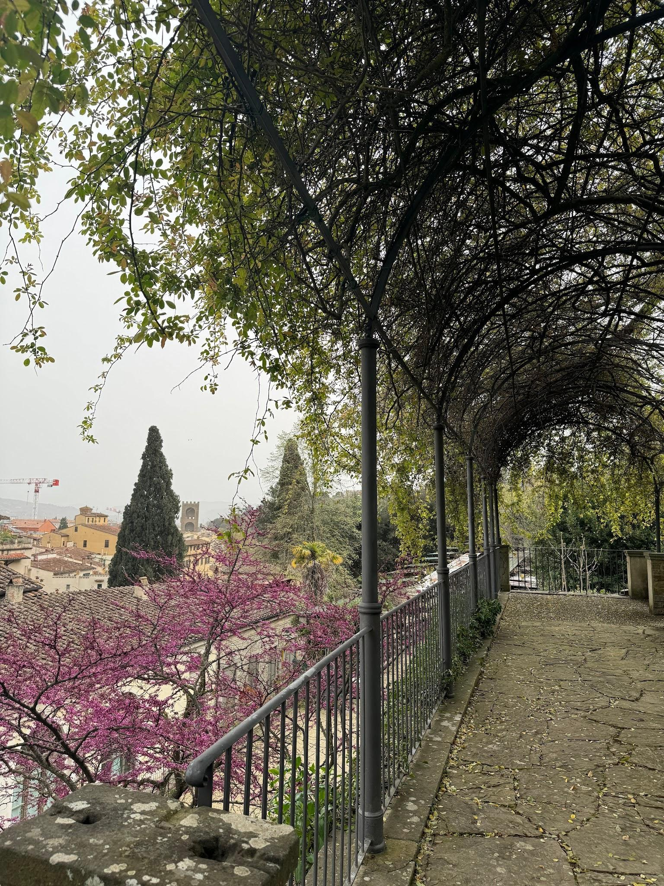 | Italy | florence | 3/30/2024 11:08:21 | Morning | yes | core_200 | Nature | Documenting the location | Nature | None |
90 | florence_image8.JPG | A woman with curly hair walks down a narrow Florentine street past a small yellow car. |  | Italy | florence | 3/30/2024 11:13:30 | Morning | yes | core_200 | Urban | Documenting the location | Built | None |
91 | florence_image9.JPG | A hand holds a chocolate and hazelnut gelato cone outside a gelateria with a flavor board. |  | Italy | florence | 3/30/2024 12:06:31 | Afternoon | yes | extra_100 | Urban | Tasting the location | Food & Drink | Hint |
92 | florence_image10.JPG | A hand holds two cannoli, pistachio and chocolate chip, in front of a pastry shop window. |  | Italy | florence | 3/30/2024 12:24:45 | Afternoon | yes | core_200 | Urban | Tasting the location | Food & Drink | Hint |
93 | florence_image12.JPG | The striped marble facade of Florence's Duomo with tourists in the piazza under a cloudy sky. | 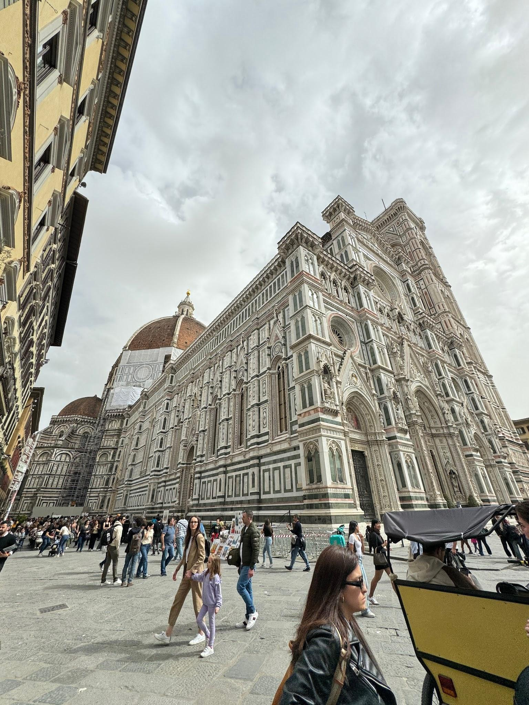 | Italy | florence | 3/30/2024 14:01:26 | Afternoon | yes | core_200 | Urban | Documenting the location | Built | Obvious |
94 | florence_image13.JPG | Looking up into Brunelleschi's dome at the Last Judgment frescoes of the Florence Duomo. | Italy | florence | 3/30/2024 14:42:21 | Afternoon | yes | extra_100 | Indoor | Documenting the location | Built | Hint | |
95 | florence_image14.JPG | Two hands raise an Aperol spritz and a mint spritz in a stone-walled Florentine street. | Italy | florence | 3/30/2024 15:29:11 | Afternoon | yes | core_200 | Urban | Tasting the location | Food & Drink | Hint | |
96 | florence_image16.JPG | A woman smiles holding a pastry shop bag on a narrow sidewalk in Florence. | Italy | florence | 3/30/2024 16:10:51 | Afternoon | yes | extra_100 | Urban | Putting myself in the frame | People | None | |
97 | florence_image18.JPG | The flower-garlanded arched entrance of the Officina Profumo-Farmaceutica di Santa Maria Novella. | Italy | florence | 3/30/2024 17:36:57 | Evening | yes | core_200 | Urban | Documenting the location | Built | None | |
98 | florence_image21.JPG | A pink neon 'Vivoli' sign glowing on a dark wall at night. |  | Italy | florence | 3/30/2024 19:54:22 | Evening | yes | core_200 | Urban | Documenting the location | Objects & Text | None |
99 | florence_image22.JPG | Two cups of affogato-style dessert from Vivoli gelateria on a bright blue table. |  | Italy | florence | 3/30/2024 20:01:23 | Evening | yes | core_200 | Indoor | Tasting the location | Food & Drink | Obvious |
100 | florence_image23.JPG | A woman takes a mirror selfie in an immersive art room projected with giant flowers. |  | Italy | florence | 3/31/2024 11:08:48 | Morning | yes | extra_100 | Indoor | Putting myself in the frame | People | None |
101 | florence_image24.JPG | A hand holds up a Kindle e-reader in a garden with bare trees and Tuscan hills behind. |  | Italy | florence | 3/31/2024 15:58:01 | Afternoon | yes | core_200 | Nature | Everyday life | Objects & Text | None |
102 | florence_image26.JPG | A wood-paneled shop with shelves of colorful leather handbags. |  | Italy | florence | 3/30/2024 16:08:08 | Afternoon | yes | core_200 | Indoor | Documenting the location | Objects & Text | None |
103 | galway_image2.JPG | A busy pedestrian shopping street in Galway with colorful buildings and bunting. |  | Ireland | galway | 3/9/2024 13:01:12 | Afternoon | yes | core_200 | Urban | Documenting the location | Built | Hint |
104 | galway_image5.JPG | Three friends in winter jackets pose on a windy seaside promenade. |  | Ireland | galway | 3/9/2024 14:08:06 | Afternoon | yes | extra_100 | Coastal | Sharing the experience | People | None |
105 | galway_image7.JPG | A row of red and pastel terraced houses along a quiet street with parked cars. | Ireland | galway | 3/9/2024 15:46:01 | Afternoon | yes | core_200 | Urban | Documenting the location | Built | None | |
106 | galway_image8.JPG | The Cliffs of Moher stretching into the misty Atlantic under an overcast sky. | Ireland | galway | 3/10/2024 12:32:16 | Afternoon | yes | core_200 | Coastal | Documenting the location | Nature | Obvious | |
107 | galway_image11.JPG | Three friends pose on the grassy edge of the Cliffs of Moher. | Ireland | galway | 3/10/2024 13:07:01 | Afternoon | yes | core_200 | Coastal | Sharing the experience | People | Obvious | |
108 | galway_image12.JPG | A woman in a teal scarf stands on a clifftop with the Cliffs of Moher behind her. |  | Ireland | galway | 3/10/2024 13:14:25 | Afternoon | yes | core_200 | Coastal | Putting myself in the frame | People | Obvious |
109 | galway_image13.JPG | Sheer dark cliffs drop into the ocean with waves breaking at their base. |  | Ireland | galway | 3/10/2024 13:16:42 | Afternoon | yes | core_200 | Coastal | Documenting the location | Nature | Obvious |
110 | galway_image14.JPG | Two people stand on a grassy headland near a sea stack along the Cliffs of Moher. | Ireland | galway | 3/10/2024 18:36:58 | Evening | yes | extra_100 | Coastal | Sharing the experience | Nature | Hint | |
111 | galway_image15.JPG | A smiling selfie of a woman in a bike helmet with two friends on a country road. |  | Ireland | galway | 3/11/2024 12:05:33 | Afternoon | yes | core_200 | Nature | Sharing the experience | People | None |
112 | galway_image17.JPG | Black-and-white cows resting in a green field bordered by stone walls near the sea. |  | Ireland | galway | 3/11/2024 12:17:28 | Afternoon | yes | core_200 | Coastal | Documenting the location | Nature | None |
113 | galway_image19.JPG | A rugged landscape of limestone rocks and boulders leading to sea cliffs on the Aran Islands. |  | Ireland | galway | 3/11/2024 14:36:51 | Afternoon | yes | core_200 | Coastal | Documenting the location | Nature | None |
114 | galway_image20.JPG | A lone person stands near the edge of a sheer limestone sea cliff on Inis Mór. |  | Ireland | galway | 3/11/2024 14:39:42 | Afternoon | yes | core_200 | Coastal | Sharing the experience | Nature | Hint |
115 | galway_image23.JPG | Three friends stand together on flat limestone rocks with the sea behind them. | Ireland | galway | 3/11/2024 14:46:10 | Afternoon | yes | extra_100 | Coastal | Sharing the experience | People | None | |
116 | galway_image25.JPG | A woman takes a mirror selfie in a narrow mirror inside a knitwear shop. | Ireland | galway | 3/11/2024 15:53:15 | Afternoon | yes | extra_100 | Indoor | Putting myself in the frame | People | None | |
117 | galway_image26.PNG | A Snapchat screenshot of friends in hats and scarves riding on a ferry. | Ireland | galway | 3/11/2024 17:56:08 | Evening | yes | extra_100 | Indoor | Sharing the experience | People | None | |
118 | genoa_image2.JPG | White market stalls glowing with warm lights in a city square at twilight. |  | Italy | genoa | 3/27/2024 18:01:47 | Evening | yes | extra_100 | Urban | Everyday life | Objects & Text | None |
119 | genoa_image3.JPG | A handwritten chalkboard listing wines and spritz prices on a bar wall. | Italy | genoa | 3/26/2024 19:14:49 | Evening | yes | core_200 | Indoor | Tasting the location | Objects & Text | None | |
120 | genoa_image4.JPG | Two hands clink glasses of white and red wine over a wooden table. | Italy | genoa | 3/26/2024 19:18:03 | Evening | yes | core_200 | Indoor | Tasting the location | Food & Drink | None | |
121 | genoa_image6.JPG | A seaside village of colorful houses curving around a small beach with boats on a cloudy day. |  | Italy | genoa | 3/27/2024 10:49:28 | Morning | yes | core_200 | Coastal | Documenting the location | Built | None |
122 | genoa_image7.JPG | A pale yellow building with painted pink panels and green shutters in Ligurian style. |  | Italy | genoa | 3/27/2024 11:03:22 | Morning | yes | extra_100 | Urban | Documenting the location | Built | None |
123 | genoa_image9.JPG | Looking up at red marble columns and a gilded, frescoed ceiling inside an ornate Genoa church. |  | Italy | genoa | 3/27/2024 16:37:17 | Afternoon | yes | core_200 | Indoor | Documenting the location | Built | None |
124 | genoa_image11.JPG | A pesto shop counter with a pasta machine, mortars on shelves, and a Pestobene ingredients poster. | Italy | genoa | 3/27/2024 17:06:11 | Evening | yes | extra_100 | Indoor | Documenting the location | Objects & Text | None | |
125 | genoa_image12.JPG | Two hands hold small pastries topped with bright green pesto. |  | Italy | genoa | 3/27/2024 17:09:29 | Evening | yes | core_200 | Urban | Tasting the location | Food & Drink | None |
126 | genoa_image13.JPG | The black-and-white striped Gothic facade and bell tower of Genoa's San Lorenzo Cathedral. | Italy | genoa | 3/27/2024 17:26:49 | Evening | yes | extra_100 | Urban | Documenting the location | Built | None | |
127 | genoa_image14.JPG | The large fountain in Piazza De Ferrari surrounded by grand buildings under gray clouds. |  | Italy | genoa | 3/27/2024 18:04:45 | Evening | yes | core_200 | Urban | Documenting the location | Built | None |
128 | genoa_image16.JPG | A long city street lined with tall buildings and café umbrellas leading to a domed church. |  | Italy | genoa | 3/27/2024 18:12:27 | Evening | yes | extra_100 | Urban | Documenting the location | Built | Hint |
129 | genoa_image17.JPG | The weathered stone and brick facade of the Columbus House with Italian flags. | Italy | genoa | 3/27/2024 18:15:34 | Evening | yes | core_200 | Urban | Documenting the location | Built | None | |
130 | genoa_image18.JPG | Gnocchi with pesto and a plate of fried pasta with wine on a red checked tablecloth. | Italy | genoa | 3/27/2024 20:22:19 | Evening | yes | core_200 | Indoor | Tasting the location | Food & Drink | None | |
131 | genoa_image19.JPG | A glass cup of tiramisu dusted with cocoa on a red checked tablecloth. |  | Italy | genoa | 3/27/2024 21:03:05 | Night | yes | core_200 | Indoor | Tasting the location | Food & Drink | None |
132 | lake_image1.JPG | A 'Welcome to Crawford, Please Drive Carefully' village sign on a grassy roadside. | UK | lake | 6/13/2024 11:43:59 | Morning | yes | core_200 | Nature | Documenting the location | Objects & Text | Hint | |
133 | lake_image2.JPG | The ruined stone walls of a castle atop a grassy mound surrounded by trees. | UK | lake | 6/13/2024 11:46:49 | Morning | yes | core_200 | Nature | Documenting the location | Built | None | |
134 | lake_image3.JPG | An iron 'Castle Crawford' sign over a stone wall with a red 'No parking' notice. | UK | lake | 6/13/2024 11:47:33 | Morning | yes | core_200 | Nature | Documenting the location | Objects & Text | Hint | |
135 | lake_image4.JPG | A skillet of patatas bravas and a dish of black pudding with bread on a café table. |  | UK | lake | 6/13/2024 13:24:15 | Afternoon | yes | core_200 | Indoor | Tasting the location | Food & Drink | None |
136 | lake_image5.JPG | Chocolate crêpes with raspberries and hazelnuts and a brownie with ice cream in speckled bowls. | UK | lake | 6/13/2024 14:08:19 | Afternoon | yes | extra_100 | Indoor | Tasting the location | Food & Drink | None | |
137 | lake_image7.JPG | Two people in rain jackets walk down a wet country lane lined with trees. | UK | lake | 6/13/2024 18:44:16 | Evening | yes | core_200 | Nature | Sharing the experience | Nature | None | |
138 | lake_image8.JPG | A green meadow with a small pond and trees under a bright blue sky with puffy clouds. | UK | lake | 6/14/2024 15:15:35 | Afternoon | yes | extra_100 | Nature | Documenting the location | Nature | None | |
139 | lake_image10.JPG | A sunny meadow with large oak trees and a wooden fence, framed by overhanging branches. |  | UK | lake | 6/14/2024 16:45:59 | Afternoon | yes | extra_100 | Nature | Documenting the location | Nature | None |
140 | lake_image11.JPG | A smiling woman in a black sweater stands on a rocky viewpoint above Lake Windermere. | UK | lake | 6/14/2024 16:52:22 | Afternoon | yes | core_200 | Nature | Putting myself in the frame | People | None | |
141 | lake_image13.JPG | A tilted selfie of three smiling people on a rocky hillside above the lake. | UK | lake | 6/14/2024 16:53:30 | Afternoon | yes | core_200 | Nature | Sharing the experience | People | None | |
142 | lake_image17.JPG | A smiling selfie of three people with green valleys and fells behind them. |  | UK | lake | 6/14/2024 16:53:00 | Afternoon | yes | core_200 | Nature | Sharing the experience | People | None |
143 | lake_image19.JPG | Two curious black-and-white cows up close in a pasture at sunset. |  | UK | lake | 6/14/2024 21:39:21 | Night | yes | core_200 | Nature | Documenting the location | Nature | None |
144 | lake_image20.JPG | A herd of black-and-white cows gathers at a metal farm gate under a pink sunset sky. | UK | lake | 6/14/2024 21:43:05 | Night | yes | extra_100 | Nature | Documenting the location | Nature | None | |
145 | lake_image21.JPG | A pink-walled room in a historic house with an oil painting, large Imari vases, and a wooden chest. | UK | lake | 6/15/2024 12:25:58 | Afternoon | yes | core_200 | Indoor | Documenting the location | Objects & Text | None | |
146 | lake_image24.JPG | A rock garden full of ferns, purple and blue flowers, and a red Japanese maple. | UK | lake | 6/15/2024 14:55:54 | Afternoon | yes | extra_100 | Nature | Documenting the location | Nature | None | |
147 | leeds_image9.JPG | View from the back of a wood-paneled lecture theater with a tablet of notes in the foreground. |  | UK | leeds | 4/22/2024 17:14:53 | Evening | yes | core_200 | Indoor | Everyday life | Objects & Text | None |
148 | leeds_image11.JPG | A big group selfie of smiling friends in a living room. |  | UK | leeds | 5/8/2024 23:27:02 | Night | yes | core_200 | Indoor | Sharing the experience | People | None |
149 | leeds_image12.JPG | A dim late-night selfie of two friends lying in bed making faces. |  | UK | leeds | 5/9/2024 0:25:00 | Night | yes | core_200 | Indoor | Sharing the experience | People | None |
150 | leeds_image14.jpg | A woman in sunglasses and a leopard skirt poses in a festival crowd in front of a large stage. | UK | leeds | 5/25/2024 13:18:17 | Afternoon | yes | extra_100 | Nature | Putting myself in the frame | People | None | |
151 | leeds_image16.JPG | Friends sit around a coffee table making beaded bracelets in a lounge. | UK | leeds | 6/6/2024 21:34:14 | Night | yes | extra_100 | Indoor | Sharing the experience | People | None | |
152 | leeds_image17.JPG | Rows of tulips and daffodils bloom along a park path near a church spire. | UK | leeds | 5/4/2024 13:45:30 | Afternoon | yes | core_200 | Nature | Documenting the location | Nature | None | |
153 | leeds_image19.JPG | A row of red-brick Victorian terraced houses with bay windows and stone steps. | UK | leeds | 2/1/2024 10:02:14 | Morning | yes | core_200 | Urban | Documenting the location | Built | Hint | |
154 | leeds_image20.JPG | A pedestrian walkway on a university campus lined with red-brick buildings, bikes, and bunting. |  | UK | leeds | 2/1/2024 13:38:59 | Afternoon | yes | core_200 | Urban | Everyday life | Built | None |
155 | leeds_image21.JPG | Two friends smile with cocktails in a dim bar with hanging macramé planters. | UK | leeds | 2/2/2024 21:26:36 | Night | yes | extra_100 | Indoor | Sharing the experience | People | None | |
156 | leeds_image22.JPG | A woman in sunglasses strikes a playful pose at a table in a decorated bar. |  | UK | leeds | 2/2/2024 22:27:12 | Night | yes | extra_100 | Indoor | Sharing the experience | People | None |
157 | leeds_image32.JPG | A cheerful selfie of four friends in a bright modern building. |  | UK | leeds | 3/2/2024 0:25:00 | Night | yes | core_200 | Indoor | Sharing the experience | People | None |
158 | leeds_image36.JPG | Two people pose in front of a large Dune: Part Two movie poster at a cinema. | UK | leeds | 3/8/2024 0:14:00 | Night | yes | core_200 | Indoor | Sharing the experience | People | None | |
159 | leeds_image39.JPG | A live jazz band with saxophone, keyboard, and drums plays in front of a red curtain. | UK | leeds | 3/14/2024 21:32:34 | Night | yes | core_200 | Indoor | Documenting the location | People | None | |
160 | leeds_image40.JPG | Three friends with drinks pose in the aisles of a vintage clothing store. | UK | leeds | 3/15/2024 15:42:30 | Afternoon | yes | core_200 | Indoor | Sharing the experience | People | None | |
161 | leeds_image45.JPG | A woman in sunglasses and a shamrock top dances in a crowded venue under colored lights. |  | UK | leeds | 3/16/2024 21:23:40 | Night | yes | extra_100 | Indoor | Sharing the experience | People | None |
162 | lisbon_image1.JPG | Four smiling friends take a selfie in front of a wall of colorful artificial flowers. |  | Portugal | lisbon | 5/17/2024 16:07:51 | Afternoon | yes | core_200 | Urban | Sharing the experience | People | None |
163 | lisbon_image2.JPG | A woman in a denim jacket walks past market stalls on a tree-lined Lisbon boulevard. | Portugal | lisbon | 5/17/2024 10:22:03 | Morning | yes | core_200 | Urban | Sharing the experience | Nature | None | |
164 | lisbon_image5.JPG | An outdoor café table full of pastéis de nata, pastries, and coffees. | Portugal | lisbon | 5/17/2024 11:09:46 | Morning | yes | core_200 | Urban | Tasting the location | Food & Drink | Hint | |
165 | lisbon_image6.JPG | Rua Augusta's patterned mosaic pavement and café tables leading to the triumphal arch. |  | Portugal | lisbon | 5/17/2024 11:45:06 | Morning | yes | core_200 | Urban | Documenting the location | Built | Hint |
166 | lisbon_image8.jpg | Looking up at rainbow umbrellas suspended over a narrow street. |  | Portugal | lisbon | 5/17/2024 12:40:14 | Afternoon | yes | core_200 | Urban | Documenting the location | Objects & Text | None |
167 | lisbon_image10.JPG | A smiling woman in a cream top stands at a railing above Lisbon's red rooftops under a cloudy sky. | Portugal | lisbon | 5/17/2024 14:30:11 | Afternoon | yes | extra_100 | Urban | Putting myself in the frame | People | Hint | |
168 | lisbon_image11.JPG | A woman in a cream top tilts her head at a rooftop viewpoint over Lisbon. | Portugal | lisbon | 5/17/2024 14:34:46 | Afternoon | yes | extra_100 | Urban | Putting myself in the frame | People | Hint | |
169 | lisbon_image12.JPG | A woman smiles at a hillside viewpoint under a blooming jacaranda tree with the city below. |  | Portugal | lisbon | 5/17/2024 14:43:19 | Afternoon | yes | core_200 | Urban | Putting myself in the frame | People | None |
170 | lisbon_image13.jpg | A woman waves beside a railing under a jacaranda tree at a Lisbon miradouro. | Portugal | lisbon | 5/17/2024 14:49:06 | Afternoon | yes | extra_100 | Urban | Putting myself in the frame | People | None | |
171 | lisbon_image15.jpg | A wall of blue-and-white azulejo tiles in front of rooftops and the river. | Portugal | lisbon | 5/17/2024 16:27:01 | Afternoon | yes | core_200 | Coastal | Documenting the location | Objects & Text | Hint | |
172 | lisbon_image17.JPG | A colorful tiled mural along a street wall with jacaranda trees blooming above. | Portugal | lisbon | 5/17/2024 17:00:57 | Evening | yes | core_200 | Urban | Documenting the location | Built | None | |
173 | lisbon_image18.JPG | Friends walk up a narrow street lined with pastel pink and yellow buildings. | Portugal | lisbon | 5/17/2024 17:35:22 | Evening | yes | extra_100 | Urban | Sharing the experience | Built | None | |
174 | lisbon_image21.JPG | Bowls of noodles, shrimp, and a dipping broth with fresh vegetables on a marble table. |  | Portugal | lisbon | 5/17/2024 20:48:26 | Evening | yes | core_200 | Indoor | Tasting the location | Food & Drink | None |
175 | lisbon_image22.jpg | A woman in a cream top sits on the riverbank with the 25 de Abril Bridge in the distance. | Portugal | lisbon | 5/17/2024 12:11:23 | Afternoon | yes | extra_100 | Coastal | Putting myself in the frame | People | Hint | |
176 | lisbon_image23.JPG | A woman stands in front of a colorful street-art mural of cartoon faces. |  | Portugal | lisbon | 5/17/2024 12:54:52 | Afternoon | yes | core_200 | Urban | Putting myself in the frame | People | None |
177 | liverpool_image1.JPG | The red wrought-iron Strawberry Field gates set in a stone wall under green trees. |  | UK | liverpool | 5/31/2024 11:49:42 | Morning | yes | core_200 | Nature | Documenting the location | Built | Hint |
178 | liverpool_image2.JPG | Friends walk along a leafy suburban road on a partly cloudy day. | UK | liverpool | 5/31/2024 11:56:34 | Morning | yes | core_200 | Nature | Sharing the experience | Nature | None | |
179 | liverpool_image3.JPG | A sandstone church tower with a clock rising above an old graveyard of headstones. | UK | liverpool | 5/31/2024 12:17:18 | Afternoon | yes | core_200 | Urban | Documenting the location | Built | None | |
180 | liverpool_image4.JPG | A 'Penny Lane' street sign on the corner of a red-brick building with parked cars along the road. |  | UK | liverpool | 5/31/2024 14:35:47 | Afternoon | yes | core_200 | Urban | Documenting the location | Built | Hint |
181 | liverpool_image5.JPG | A weathered, graffiti-covered 'Penny Lane' sign behind protective glass on a stone wall. |  | UK | liverpool | 5/31/2024 14:57:12 | Afternoon | yes | core_200 | Urban | Documenting the location | Objects & Text | Hint |
182 | liverpool_image6.JPG | Museum display cases showing 'Love Me Do' vinyl records in a red Beatles exhibit. |  | UK | liverpool | 5/31/2024 16:16:23 | Afternoon | yes | core_200 | Indoor | Documenting the location | Objects & Text | Hint |
183 | liverpool_image7.JPG | A replica Cavern Club stage with Beatles-branded drums, guitars, and a colorful band-name wall. |  | UK | liverpool | 5/31/2024 16:27:33 | Afternoon | yes | core_200 | Indoor | Documenting the location | Objects & Text | Hint |
184 | liverpool_image8.JPG | Two Neapolitan margherita pizzas with drinks on a bright green table. | UK | liverpool | 5/31/2024 17:41:19 | Evening | yes | core_200 | Indoor | Tasting the location | Food & Drink | None | |
185 | liverpool_image9.JPG | Giant colorful letters spelling 'LIVERPOOL' along a paved waterfront walkway. |  | UK | liverpool | 5/31/2024 19:20:26 | Evening | yes | core_200 | Urban | Documenting the location | Objects & Text | Obvious |
186 | london_image1.JPG | Crowds browse food stalls under strings of flags at the Ropewalk market beneath railway arches. |  | UK | london | 2/10/2024 15:00:00 | Afternoon | yes | core_200 | Urban | Documenting the location | People | None |
187 | london_image3.JPG | A Korean meal of spicy kimchi stew with a bowl of rice. | UK | london | 2/10/2024 19:14:00 | Evening | yes | core_200 | Indoor | Tasting the location | Food & Drink | None | |
188 | london_image4.JPG | A smiling woman holds up a gray plush bunny inside a toy shop. | UK | london | 2/11/2024 16:31:00 | Evening | yes | extra_100 | Indoor | Putting myself in the frame | People | None | |
189 | london_image5.JPG | An Indian feast of curries, naan, and rice at the Hichki restaurant. |  | UK | london | 2/11/2024 20:43:00 | Evening | yes | extra_100 | Indoor | Tasting the location | Food & Drink | None |
190 | london_image7.JPG | Three friends take a selfie inside a London Eye capsule with the city lit up at night. |  | UK | london | 2/11/2024 18:31:14 | Evening | yes | core_200 | Indoor | Sharing the experience | People | Hint |
191 | london_image9.JPG | A woman shoots hoops at an arcade basketball game in a dim, blue-lit room. | UK | london | 2/11/2024 23:42:48 | Night | yes | extra_100 | Indoor | Putting myself in the frame | None/Other | None | |
192 | london_image12.JPG | A woman in a long coat walks on the sidewalk with Big Ben behind her. |  | UK | london | 2/10/2024 14:13:37 | Afternoon | yes | core_200 | Urban | Putting myself in the frame | People | Obvious |
193 | london_image13.JPG | A woman poses on the pavement with Big Ben and a red double-decker bus behind her. | UK | london | 2/10/2024 14:13:46 | Afternoon | yes | core_200 | Urban | Putting myself in the frame | People | Obvious | |
194 | london_image14.JPG | Close-up of the ornate gold clock face and spire of Big Ben against a cloudy sky. |  | UK | london | 2/10/2024 14:17:32 | Afternoon | yes | extra_100 | Urban | Documenting the location | Built | Obvious |
195 | london_image16.JPG | Brunch of avocado toast with eggs, a smoothie bowl, and French toast with berries and banana. |  | UK | london | 2/11/2024 10:36:21 | Morning | yes | core_200 | Indoor | Tasting the location | Food & Drink | None |
196 | london_image17.JPG | Crowds walk down Portobello Road past pastel-painted houses under a blue sky. |  | UK | london | 2/11/2024 13:31:05 | Afternoon | yes | core_200 | Urban | Documenting the location | Built | Hint |
197 | london_image21.JPG | A woman makes a surprised face in front of the glittering night view of London from high up. |  | UK | london | 2/11/2024 18:28:37 | Evening | yes | core_200 | Indoor | Putting myself in the frame | People | None |
198 | london_image26.JPG | A woman lies back in a pink-lit ball pit at an adult ball-pit bar. | UK | london | 2/11/2024 23:21:39 | Night | yes | core_200 | Indoor | Putting myself in the frame | None/Other | None | |
199 | london_image27.JPG | A black 'Crawfords Delivery Services' van parked outside a Café de Nata on a London street. |  | UK | london | 2/10/2024 16:17:34 | Afternoon | yes | extra_100 | Urban | Documenting the location | Objects & Text | None |
200 | london_image28.JPG | People with umbrellas walk past a grand stone museum facade under a golden sunset sky. |  | UK | london | 2/10/2024 17:00:10 | Evening | yes | core_200 | Urban | Sharing the experience | Built | None |
201 | madrid_image1.JPG | A trumpeter and band perform under red lights at the Intruso jazz club. |  | Spain | madrid | 5/15/2024 0:36:55 | Night | yes | core_200 | Indoor | Documenting the location | People | None |
202 | madrid_image2.JPG | A cappuccino with a cinnamon stripe in a bright yellow cup on a wooden table. | Spain | madrid | 5/15/2024 11:19:18 | Morning | yes | core_200 | Indoor | Tasting the location | Food & Drink | None | |
203 | madrid_image3.JPG | A picnic spread on the grass with baguettes, chips, fruit, cured meats, and drinks. |  | Spain | madrid | 5/15/2024 16:12:03 | Afternoon | yes | core_200 | Nature | Tasting the location | Food & Drink | None |
204 | madrid_image4.JPG | A peacock displays its full fanned tail on a paved path. | Spain | madrid | 5/15/2024 17:22:39 | Evening | yes | core_200 | Urban | Documenting the location | Nature | None | |
205 | madrid_image5.JPG | Rose-covered arches over a curving path in the Rosaleda rose garden of Retiro Park. | Spain | madrid | 5/15/2024 17:33:37 | Evening | yes | core_200 | Nature | Documenting the location | Nature | None | |
206 | madrid_image6.JPG | A smiling woman in a denim jacket stands among blooming pink roses in a garden. |  | Spain | madrid | 5/15/2024 17:37:47 | Evening | yes | extra_100 | Nature | Putting myself in the frame | People | None |
207 | madrid_image7.JPG | Two friends pose in front of climbing pink roses in a sunny rose garden. | Spain | madrid | 5/15/2024 17:44:21 | Evening | yes | core_200 | Nature | Sharing the experience | People | None | |
208 | madrid_image8.JPG | Three friends stand together in a rose garden under a blue sky with puffy clouds. |  | Spain | madrid | 5/15/2024 17:45:32 | Evening | yes | core_200 | Nature | Sharing the experience | People | None |
209 | madrid_image9.JPG | Four friends pose on a path in the Retiro rose garden surrounded by pink blooms. | Spain | madrid | 5/15/2024 17:46:32 | Evening | yes | extra_100 | Nature | Sharing the experience | People | None | |
210 | madrid_image10.JPG | A woman walks past a fountain and flowering roses in a formal rose garden. | Spain | madrid | 5/15/2024 17:49:43 | Evening | yes | extra_100 | Nature | Putting myself in the frame | People | None | |
211 | madrid_image11.JPG | A woman looks over her shoulder beside peach roses and a fountain in the rose garden. | Spain | madrid | 5/15/2024 17:53:06 | Evening | yes | core_200 | Nature | Putting myself in the frame | People | None | |
212 | madrid_image12.JPG | A pan of seafood paella with olives and a small cazuela dish on a restaurant table. |  | Spain | madrid | 5/15/2024 22:14:02 | Night | yes | extra_100 | Indoor | Tasting the location | Food & Drink | Hint |
213 | madrid_image13.JPG | Brunch of coffees, avocado toast with eggs, toast with jam, and a bowl of nuts and berries. | Spain | madrid | 5/16/2024 11:54:56 | Morning | yes | extra_100 | Indoor | Tasting the location | Food & Drink | None | |
214 | madrid_image14.JPG | Two friends laugh and hug in a cozy brick-walled bar. |  | Spain | madrid | 5/16/2024 0:56:57 | Night | yes | core_200 | Indoor | Sharing the experience | People | None |
215 | marseille_image6.JPG | People stroll along the quay of Marseille's Old Port beside moored boats under puffy clouds. |  | France | marseille | 3/23/2024 11:46:35 | Morning | yes | core_200 | Coastal | Documenting the location | Built | None |
216 | marseille_image7.JPG | Two smiling friends take a selfie on the Old Port promenade with Notre-Dame de la Garde in the distance. |  | France | marseille | 3/23/2024 11:54:58 | Morning | yes | extra_100 | Coastal | Sharing the experience | People | None |
217 | marseille_image8.JPG | A latte with leaf art in a mint-green cup on a matching green café table. | France | marseille | 3/23/2024 12:23:01 | Afternoon | yes | core_200 | Urban | Tasting the location | Food & Drink | None | |
218 | marseille_image11.JPG | A smiling woman in a white shirt walks down a sunny sloping residential street. |  | France | marseille | 3/23/2024 14:04:53 | Afternoon | yes | extra_100 | Urban | Putting myself in the frame | People | None |
219 | marseille_image15.JPG | Two friends pose at a hilltop viewpoint with the sea and coastline behind them. |  | France | marseille | 3/23/2024 14:25:27 | Afternoon | yes | extra_100 | Coastal | Sharing the experience | People | None |
220 | marseille_image16.JPG | Panoramic view over Marseille's terracotta rooftops to the surrounding mountains. | France | marseille | 3/23/2024 14:31:05 | Afternoon | yes | core_200 | Urban | Documenting the location | Built | None | |
221 | marseille_image17.JPG | Notre-Dame de la Garde basilica on its hill above trees and a street of parked cars. | France | marseille | 3/23/2024 14:45:08 | Afternoon | yes | extra_100 | Urban | Documenting the location | Built | Hint | |
222 | marseille_image20.JPG | The grand colonnaded Palais Longchamp and its cascade fountain reflected in a pool. | France | marseille | 3/23/2024 16:35:56 | Afternoon | yes | core_200 | Urban | Documenting the location | Built | Hint | |
223 | marseille_image21.JPG | Two friends in sunglasses take a selfie in front of Palais Longchamp. |  | France | marseille | 3/23/2024 16:36:36 | Afternoon | yes | core_200 | Urban | Sharing the experience | People | None |
224 | marseille_image22.JPG | Colorful harborfront buildings and moored boats in the port of Cassis under a deep blue sky. | France | marseille | 3/24/2024 8:56:53 | Morning | yes | core_200 | Coastal | Documenting the location | Built | Hint | |
225 | marseille_image26.JPG | Looking down a narrow calanque inlet lined with moored sailboats and pine forest. | France | marseille | 3/24/2024 10:55:03 | Morning | yes | core_200 | Coastal | Documenting the location | Nature | None | |
226 | marseille_image28.JPG | Two friends with windblown hair take a smiling selfie above a calanque. |  | France | marseille | 3/24/2024 11:21:09 | Morning | yes | core_200 | Coastal | Sharing the experience | People | None |
227 | marseille_image29.JPG | A deep blue calanque opening to the sea, framed by pine trees and white cliffs. | France | marseille | 3/24/2024 11:23:31 | Morning | yes | extra_100 | Coastal | Documenting the location | Nature | None | |
228 | marseille_image31.JPG | A pebble beach at the end of a narrow calanque between towering limestone cliffs. |  | France | marseille | 3/24/2024 12:26:50 | Afternoon | yes | core_200 | Coastal | Documenting the location | Nature | None |
229 | marseille_image32.JPG | Two smiling friends take a selfie on the pebble beach of Calanque d'En-Vau. | France | marseille | 3/24/2024 12:27:46 | Afternoon | yes | core_200 | Coastal | Sharing the experience | People | None | |
230 | morocco_image1.JPG | The earthen ksar of Aït Benhaddou on a hill above a green oasis and dry riverbed. |  | Morocco | morocco | 4/12/2024 12:03:53 | Afternoon | yes | core_200 | Nature | Documenting the location | Built | Obvious |
231 | morocco_image3.JPG | A smiling woman in black stands on a rocky desert track with barren hills behind. |  | Morocco | morocco | 4/12/2024 16:13:59 | Afternoon | yes | core_200 | Nature | Putting myself in the frame | People | Hint |
232 | morocco_image5.JPG | A smiling woman in a patterned headscarf takes a tilted selfie on a camel in the desert. | Morocco | morocco | 4/12/2024 18:56:43 | Evening | yes | extra_100 | Nature | Putting myself in the frame | People | Hint | |
233 | morocco_image7.JPG | A woman in a blue sweater stands on rocky ground as the sun rises behind the hills. | Morocco | morocco | 4/13/2024 6:20:51 | Morning | yes | core_200 | Nature | Putting myself in the frame | People | Hint | |
234 | morocco_image8.JPG | A saddled camel kneels on the sand looking at the camera, with a caravan behind in the haze. |  | Morocco | morocco | 4/13/2024 7:17:10 | Morning | yes | core_200 | Nature | Documenting the location | Nature | Hint |
235 | morocco_image11.JPG | Looking down into the tiled courtyard of a traditional riad with carved balconies and rugs. | Morocco | morocco | 4/10/2024 20:21:43 | Evening | yes | extra_100 | Indoor | Documenting the location | Built | None | |
236 | morocco_image12.JPG | A Moroccan lunch of vegetable couscous in a tagine dish, kebabs, fries, and bread. |  | Morocco | morocco | 4/10/2024 21:33:52 | Night | yes | extra_100 | Indoor | Tasting the location | Food & Drink | Hint |
237 | morocco_image14.JPG | A souk alley shaded by a wooden lattice roof, with shoppers and shopfronts. |  | Morocco | morocco | 4/11/2024 12:12:16 | Afternoon | yes | extra_100 | Indoor | Documenting the location | Built | Hint |
238 | morocco_image15.JPG | A colorful covered souk lane lined with textiles, bags, and souvenirs under carved wooden screens. | Morocco | morocco | 4/11/2024 14:05:33 | Afternoon | yes | core_200 | Indoor | Documenting the location | Built | Hint | |
239 | morocco_image16.JPG | A green-tiled courtyard with a mosaic fountain channel leading to a curtained pavilion. |  | Morocco | morocco | 4/11/2024 14:52:37 | Afternoon | yes | core_200 | Urban | Documenting the location | Built | Hint |
240 | morocco_image17.JPG | A carved, painted pavilion ceiling framing a tiled fountain and garden in Marrakech. | Morocco | morocco | 4/11/2024 14:56:52 | Afternoon | yes | extra_100 | Indoor | Documenting the location | Built | Hint | |
241 | morocco_image18.JPG | A night dinner of tagine, rice, and kebabs on a blue-and-yellow mosaic table. |  | Morocco | morocco | 4/11/2024 20:34:42 | Evening | yes | core_200 | Indoor | Tasting the location | Food & Drink | Hint |
242 | morocco_image20.JPG | A display of small paintings for sale on a rooftop overlooking an oasis valley. | Morocco | morocco | 4/12/2024 12:37:11 | Afternoon | yes | core_200 | Nature | Documenting the location | Objects & Text | Hint | |
243 | morocco_image24.JPG | Point-of-view from a camel saddle following a line of riders across the desert. |  | Morocco | morocco | 4/13/2024 7:28:34 | Morning | yes | core_200 | Nature | Sharing the experience | Nature | Hint |
244 | morocco_image25.JPG | A lush palm oasis stretches toward a rocky mountain under a hazy sky. |  | Morocco | morocco | 4/13/2024 10:05:36 | Morning | yes | core_200 | Nature | Documenting the location | Nature | None |
245 | nice_image1.JPG | A smiling woman stands in front of a boutique called 'Nat's' on a hexagon-paved street. | France | nice | 3/25/2024 14:22:54 | Afternoon | yes | extra_100 | Urban | Putting myself in the frame | People | None | |
246 | nice_image2.JPG | A woman walks down a street in Nice lined with ochre and pink buildings with balconies. | France | nice | 3/25/2024 14:53:13 | Afternoon | yes | core_200 | Urban | Documenting the location | Built | None | |
247 | nice_image3.JPG | View along a narrow street from a balcony with pale green shutters and yellow facades. | France | nice | 3/25/2024 10:31:24 | Morning | yes | extra_100 | Urban | Documenting the location | Built | Hint | |
248 | nice_image4.JPG | The checkerboard-paved Place Masséna with red buildings and statues on poles under a gray sky. |  | France | nice | 3/25/2024 11:43:43 | Morning | yes | extra_100 | Urban | Documenting the location | Built | Hint |
249 | nice_image5.JPG | A hand holds two bakery bags of pastries and cookies over a sunny pavement. | France | nice | 3/25/2024 12:33:10 | Afternoon | yes | extra_100 | Urban | Tasting the location | Food & Drink | None | |
250 | nice_image6.JPG | A pebbly beach in Nice with turquoise waves and Castle Hill in the background. | France | nice | 3/25/2024 13:01:22 | Afternoon | yes | core_200 | Coastal | Documenting the location | Nature | None | |
251 | nice_image7.JPG | A beach restaurant table set with a patterned plate and blue glasses facing the gray sea. | France | nice | 3/25/2024 13:15:11 | Afternoon | yes | extra_100 | Coastal | Documenting the location | Objects & Text | None | |
252 | nice_image9.JPG | Two friends take a smiling selfie above Monaco's harbor and hillside buildings. | France | nice | 3/26/2024 10:26:16 | Morning | yes | core_200 | Coastal | Sharing the experience | People | None | |
253 | nice_image10.JPG | A woman walks along the Promenade des Anglais past blue chairs and a white pergola. | France | nice | 3/25/2024 13:58:19 | Afternoon | yes | core_200 | Coastal | Sharing the experience | People | None | |
254 | nice_image11.JPG | Shoppers browse market stalls under striped awnings in Nice's Cours Saleya. |  | France | nice | 3/25/2024 14:56:47 | Afternoon | yes | core_200 | Urban | Everyday life | None/Other | None |
255 | nice_image13.JPG | The sweeping curve of the Baie des Anges and the city of Nice seen from above. | France | nice | 3/25/2024 15:22:29 | Afternoon | yes | core_200 | Coastal | Documenting the location | Nature | Hint | |
256 | nice_image14.JPG | The cascading waterfall on Castle Hill in Nice falling into a pool. |  | France | nice | 3/25/2024 15:47:20 | Afternoon | yes | core_200 | Nature | Documenting the location | Nature | None |
257 | nice_image15.JPG | View of the Baie des Anges and Nice's red rooftops from Castle Hill, framed by branches. | France | nice | 3/25/2024 15:51:37 | Afternoon | yes | core_200 | Coastal | Documenting the location | Nature | Hint | |
258 | nice_image18.JPG | A woman poses at a wall overlooking Monaco's harbor and high-rises. | France | nice | 3/26/2024 10:17:52 | Morning | yes | core_200 | Coastal | Putting myself in the frame | People | Hint | |
259 | rome_image2.JPG | Glasses of spritz, white wine, and red wine on a restaurant table with red napkins. | Italy | rome | 4/1/2024 19:38:09 | Evening | yes | extra_100 | Indoor | Tasting the location | Food & Drink | None | |
260 | rome_image5.JPG | The ruins of the Roman Forum with churches and the Vittoriano monument behind. |  | Italy | rome | 4/2/2024 12:53:34 | Afternoon | yes | core_200 | Urban | Documenting the location | Built | Obvious |
261 | rome_image7.JPG | Crowds in the piazza before the columned portico and dome of the Pantheon. |  | Italy | rome | 4/2/2024 14:17:36 | Afternoon | yes | core_200 | Urban | Documenting the location | Built | Obvious |
262 | rome_image8.JPG | Colorful cocktails including spritzes and mojitos with straws on a red tablecloth. |  | Italy | rome | 4/2/2024 14:47:11 | Afternoon | yes | core_200 | Urban | Tasting the location | Food & Drink | None |
263 | rome_image10.JPG | Crowds sit on the Spanish Steps below the twin-towered Trinità dei Monti church. | Italy | rome | 4/2/2024 17:38:51 | Evening | yes | core_200 | Urban | Documenting the location | Built | Obvious | |
264 | rome_image12.JPG | Three friends smile together against the weathered stone base of an obelisk. | Italy | rome | 4/2/2024 17:46:10 | Evening | yes | core_200 | Urban | Sharing the experience | People | None | |
265 | rome_image13.JPG | Cornetti pastries and coffees in paper cups on a metal café table. | Italy | rome | 4/3/2024 10:37:47 | Morning | yes | core_200 | Urban | Tasting the location | Food & Drink | None | |
266 | rome_image16.JPG | A water lily painting in an ornate gold frame hanging on a gallery wall. |  | Italy | rome | 4/3/2024 12:28:42 | Afternoon | yes | core_200 | Indoor | Documenting the location | Objects & Text | None |
267 | rome_image17.JPG | A smiling woman poses in front of the Trevi Fountain. |  | Italy | rome | 4/3/2024 13:40:48 | Afternoon | yes | extra_100 | Urban | Putting myself in the frame | People | Obvious |
268 | rome_image18.JPG | A smiling woman holds up a 'Calendario Romano' calendar of black-and-white priest portraits. | Italy | rome | 4/3/2024 14:21:01 | Afternoon | yes | extra_100 | Indoor | Sharing the experience | People | Hint | |
269 | rome_image19.JPG | Cooking-class workstations set with flour, eggs, rolling pins, and aprons. |  | Italy | rome | 4/3/2024 15:39:34 | Afternoon | yes | core_200 | Indoor | Tasting the location | Food & Drink | None |
270 | rome_image20.JPG | A hand holds up a cup of homemade tiramisu during a cooking class. |  | Italy | rome | 4/3/2024 16:06:57 | Afternoon | yes | extra_100 | Indoor | Tasting the location | Food & Drink | None |
271 | rome_image21.JPG | Freshly made ravioli and tagliatelle on floured wooden boards at a pasta class. | Italy | rome | 4/3/2024 17:13:38 | Evening | yes | core_200 | Indoor | Tasting the location | Food & Drink | None | |
272 | rome_image23.JPG | Four friends pull silly faces in a selfie in St. Peter's Square. |  | Italy | rome | 4/3/2024 19:07:30 | Evening | yes | extra_100 | Urban | Sharing the experience | People | None |
273 | rome_image26.JPG | Women in aprons whisk eggs and mascarpone while making tiramisu in a cooking class. |  | Italy | rome | 4/3/2024 15:51:35 | Afternoon | yes | core_200 | Indoor | Sharing the experience | People | None |
274 | santorini_image2.JPG | Bright magenta bougainvillea spills over a white terrace with a clay pot. | Greece | santorini | 4/16/2024 16:21:10 | Afternoon | yes | core_200 | Nature | Documenting the location | Nature | None | |
275 | santorini_image3.JPG | Honey-drizzled fried feta with sesame seeds beside a Greek salad and tzatziki. | Greece | santorini | 4/16/2024 20:09:38 | Evening | yes | extra_100 | Indoor | Tasting the location | Food & Drink | Hint | |
276 | santorini_image4.JPG | White cliffside buildings of Fira cascade down the caldera rim. |  | Greece | santorini | 4/17/2024 14:31:10 | Afternoon | yes | core_200 | Coastal | Documenting the location | Built | Obvious |
277 | santorini_image5.JPG | A woman in a cap takes a tilted selfie on a white wall above the caldera and cliffside town. |  | Greece | santorini | 4/17/2024 14:38:04 | Afternoon | yes | core_200 | Coastal | Putting myself in the frame | People | Obvious |
278 | santorini_image6.JPG | A smiling woman in a cap stands by a rock with the caldera cliffs and sea behind her. |  | Greece | santorini | 4/17/2024 16:03:05 | Afternoon | yes | extra_100 | Coastal | Putting myself in the frame | People | Obvious |
279 | santorini_image7.JPG | Two people walk down a narrow lane between cream-colored walls at dusk. | Greece | santorini | 4/17/2024 20:05:20 | Evening | yes | core_200 | Urban | Documenting the location | Built | Hint | |
280 | santorini_image8.JPG | The Olympic flag flies beside a lit cauldron flame at a ceremony. | Greece | santorini | 4/19/2024 9:52:33 | Morning | yes | extra_100 | Urban | Documenting the location | Objects & Text | Hint | |
281 | santorini_image9.JPG | A Greek flag between two Santo Wines flags on a terrace above the sea. |  | Greece | santorini | 4/19/2024 14:21:56 | Afternoon | yes | core_200 | Coastal | Documenting the location | Objects & Text | Obvious |
282 | santorini_image10.JPG | A wine glass on a terrace table overlooking the caldera under a cloudy sky. |  | Greece | santorini | 4/19/2024 17:06:07 | Evening | yes | extra_100 | Coastal | Documenting the location | Nature | Hint |
283 | santorini_image15.JPG | The sun sets in a hazy orange glow over the sea beyond Oia's windmills and white houses. |  | Greece | santorini | 4/17/2024 19:43:57 | Evening | yes | core_200 | Coastal | Documenting the location | Nature | Obvious |
284 | santorini_image16.JPG | A pita gyro stuffed with fries next to a can of Coca-Cola on a taverna table. | Greece | santorini | 4/19/2024 13:13:17 | Afternoon | yes | core_200 | Indoor | Tasting the location | Food & Drink | Hint | |
285 | santorini_image17.JPG | A smiling woman in a red dress takes a fisheye selfie on a white wall above the caldera. | Greece | santorini | 4/19/2024 14:14:18 | Afternoon | yes | core_200 | Coastal | Putting myself in the frame | People | None | |
286 | santorini_image18.JPG | A wine-tasting flight of white and rosé wines with a cheese and charcuterie board. |  | Greece | santorini | 4/19/2024 15:58:44 | Afternoon | yes | extra_100 | Coastal | Tasting the location | Food & Drink | None |
287 | santorini_image19.JPG | Neon lights, lasers, and a disco ball over a packed crowd in a nightclub. |  | Greece | santorini | 4/20/2024 0:39:20 | Night | yes | core_200 | Indoor | Documenting the location | None/Other | None |
288 | york_image2.JPG | Shoppers walk down a busy street in York lined with old brick buildings and bunting. |  | UK | york | 6/9/2024 12:13:44 | Afternoon | yes | extra_100 | Urban | Documenting the location | Built | None |
289 | york_image4.JPG | Crowds pack the narrow Shambles beneath hanging signs for the Shambles Kitchen and food court. | UK | york | 6/9/2024 12:39:25 | Afternoon | yes | core_200 | Urban | Documenting the location | Built | Hint | |
290 | york_image5.JPG | The Gothic south transept of York Minster with its rose window under a gray sky. | UK | york | 6/9/2024 13:05:28 | Afternoon | yes | core_200 | Urban | Documenting the location | Built | Hint | |
291 | york_image6.JPG | The high altar and carved stone choir screen in York Minster's nave, with the organ above. | UK | york | 6/9/2024 13:21:23 | Afternoon | yes | core_200 | Indoor | Documenting the location | Built | None | |
292 | york_image7.JPG | The Great East Window and ribbed wooden vault inside York Minster. |  | UK | york | 6/9/2024 13:22:39 | Afternoon | yes | extra_100 | Indoor | Documenting the location | Built | None |
293 | york_image10.JPG | Intricately carved stone canopies above the seats in York Minster's Chapter House. |  | UK | york | 6/9/2024 13:52:15 | Afternoon | yes | core_200 | Indoor | Documenting the location | Built | None |
294 | york_image11.JPG | Pedestrians pass under Bootham Bar, a medieval stone gate in York's city walls. | UK | york | 6/9/2024 14:52:34 | Afternoon | yes | extra_100 | Urban | Documenting the location | Built | None | |
295 | york_image12.JPG | Chalkboard signs for handmade cakes and 'Open to Dogs & Racoons' outside a red café front. |  | UK | york | 6/9/2024 14:52:49 | Afternoon | yes | core_200 | Urban | Documenting the location | Objects & Text | None |
296 | york_image13.JPG | The towers of York Minster rising above brick buildings, seen from the city walls. | UK | york | 6/9/2024 14:56:00 | Afternoon | yes | extra_100 | Urban | Documenting the location | Built | Hint | |
297 | york_image14.JPG | A black-and-white Tudor timber-framed building on a street corner in York. | UK | york | 6/9/2024 16:00:55 | Afternoon | yes | extra_100 | Urban | Documenting the location | Built | Hint | |
298 | york_image15.JPG | A hand holds a small white crocheted ghost toy in the back seat of a car. |  | UK | york | 6/9/2024 16:47:29 | Afternoon | yes | core_200 | Indoor | Everyday life | Objects & Text | None |
299 | york_image16.JPG | A cozy guesthouse bedroom with twin beds under low black-beamed ceilings. |  | UK | york | 6/9/2024 17:42:23 | Evening | yes | core_200 | Indoor | Everyday life | None/Other | None |
300 | york_image17.JPG | Sunday roast dinners with Yorkshire pudding, vegetables, and gravy on a red tablecloth. |  | UK | york | 6/9/2024 19:24:06 | Evening | yes | core_200 | Indoor | Tasting the location | Food & Drink | Hint |
301 | york_image18.JPG | The Lion Inn, a stone country pub, seen through the rear window of a car. | UK | york | 6/10/2024 10:41:10 | Morning | yes | core_200 | Indoor | Documenting the location | Built | None |